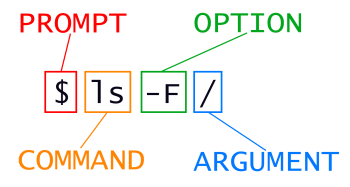

Content from シェルの紹介
最終更新日：2024-11-22 | ページの編集
概要
質問
- コマンドシェルとは何で、なぜそれを使うべきなのか？
目的
- シェルがキーボード、画面、オペレーティングシステム、ユーザーのプログラムにどのように関連しているかを説明する。
- グラフィカルインターフェースではなくコマンドラインインターフェースを使用すべき状況とその理由を説明する。
背景
人間とコンピュータは、キーボードとマウス、タッチスクリーンインターフェース、または音声認識システムなど、さまざまな方法でやり取りします。 個人用コンピュータとやり取りする最も一般的な方法は、グラフィカルユーザーインターフェース（GUI）と呼ばれています。 GUIでは、マウスをクリックしてメニュー操作を行うことで指示を出します。
GUIの視覚的な助けは学習を直感的にしますが、この方法では指示を拡張するのが非常に困難です。 次のようなタスクを想像してください： 文献検索のために、1000個の異なるディレクトリ内の1000個のテキストファイルの3行目をコピーして、1つのファイルに貼り付ける必要がある場合です。 GUIを使用すると、何時間もクリックを続けるだけでなく、反復作業の過程でエラーを犯す可能性もあります。 ここで役立つのがUnixシェルです。 Unixシェルは、コマンドラインインターフェース（CLI）であると同時にスクリプト言語でもあり、こうした反復作業を自動かつ迅速に行うことができます。 適切なコマンドを使用すれば、シェルは必要に応じてタスクを何度でも繰り返すことが可能です。 シェルを使用すれば、この文献検索の例のタスクは数秒で完了します。
シェル
シェルは、ユーザーがコマンドを入力できるプログラムです。 シェルを使うことで、気候モデリングソフトウェアのような複雑なプログラムを呼び出したり、 1行のコードで空のディレクトリを作成する簡単なコマンドを実行することができます。 最も一般的なUnixシェルはBash（Bourne Again Shellの略で、Stephen Bourneによって作成されたシェルに由来します）です。 Bashは、ほとんどの最新のUnix実装やWindows用のUnixライクツールパッケージのデフォルトシェルです。 「Git Bash」は、WindowsユーザーがGitと対話する際にBashライクなインターフェースを使用できるようにするソフトウェアです。
シェルの使用は、ある程度の努力と学習時間が必要です。 GUIが選択肢を提示するのに対し、CLIでは選択肢が自動的に提示されることはありません。 そのため、新しい言語を学ぶ際の語彙のように、いくつかのコマンドを覚える必要があります。 しかし、話し言葉とは異なり、少数の「単語」（つまりコマンド）を覚えるだけで非常に多くのことができるようになります。 今日、その基本的なコマンドについて学びます。
シェルの文法を使用すれば、既存のツールを組み合わせて強力なパイプラインを作成したり、大量のデータを自動的に処理したりすることができます。 コマンドのシーケンスをスクリプトに書き込むことで、ワークフローの再現性を向上させることができます。
さらに、コマンドラインはリモートマシンやスーパーコンピュータと対話する最も簡単な方法であることがよくあります。 シェルの習熟は、高性能コンピューティングシステムを含むさまざまな専門ツールやリソースを操作するためにほぼ必須です。 クラスタやクラウドコンピューティングシステムが科学データ処理でますます普及する中、 シェルを操作するスキルはますます必要とされています。 ここで学ぶコマンドラインスキルを基に、さまざまな科学的課題や計算上の課題に取り組むことができます。
さあ、始めましょう。
シェルを最初に開いたとき、プロンプトが表示されます。 これは、シェルが入力を待機していることを示します。
シェルは通常、プロンプトとして$を使用しますが、異なる記号を使用することもあります。
このレッスンの例では、プロンプトを$として表示します。
最も重要なことは、プロンプトを入力しないことです。
コマンドはプロンプトの後に続く部分のみを入力してください。
このルールは、このレッスンだけでなく、他のリソースのレッスンにも適用されます。
また、コマンドを入力した後は、Enterキーを押して実行する必要があります。
プロンプトの後には、テキストカーソルが表示されます。 これは、入力した文字が表示される位置を示すものです。 カーソルは通常、点滅するまたは固定されたブロックですが、アンダースコアやパイプであることもあります。 例えば、テキストエディタプログラムで見たことがあるかもしれません。
プロンプトは少し異なる場合があります。
特に、ほとんどの一般的なシェル環境では、デフォルトでユーザー名とホスト名が$の前に表示されます。
例えば、次のようになります：
プロンプトにこれ以上の情報が含まれることもあります。
プロンプトが短い$でなくても気にしないでください。
このレッスンは、この追加情報に依存しませんし、作業の妨げにもなりません。
注目すべき唯一の重要な項目は$文字自体であり、その理由については後ほど説明します。
では、最初のコマンドlsを試してみましょう。
これは、現在のディレクトリの内容をリスト表示するコマンドです：
出力
Desktop Downloads Movies Pictures
Documents Library Music Publicネルのパイプライン：典型的な問題
ネル・ネモは海洋生物学者で、 北太平洋環流を
6か月間調査して帰ってきたばかりです。 彼女は大太平洋ゴミベルトで
ゼラチン質の海洋生物を採取していました。
彼女は1520のサンプルを、300種類のタンパク質の相対量を測定するアッセイ装置にかけました。
彼女はこれら1520のファイルを、goostats.shという架空のプログラムで処理する必要があります。
さらに、この大作業に加えて、今月中に結果をまとめて、Aquatic Goo
Lettersの特集号に論文を掲載するための準備をする必要があります。
ネルがGUIを使って手作業でgoostats.shを実行すると、
1520回ファイルを選択して開かなければなりません。
goostats.shが各ファイルを処理するのに30秒かかる場合、
この作業にはネルの
注意を12時間以上必要とします。 シェルを使用すれば、ネルはこの単調な作業をコンピュータに任せ、自分は論文作成に集中することができます。
次のいくつかのレッスンでは、ネルがこれを達成する方法を探ります。
具体的には、コマンドシェルを使用してgoostats.shプログラムを実行し、
ファイル名の入力を繰り返すステップを自動化するためにループを使用する方法を説明します。
これにより、彼女が論文を書いている間、コンピュータが作業を行うことができます。
さらに、処理パイプラインを一度構築すれば、 データをさらに収集するたびに再利用することが可能になります。
彼女のタスクを達成するために、ネルは次のことを知る必要があります：
- ファイル/ディレクトリに移動する
- ファイル/ディレクトリを作成する
- ファイルの長さを確認する
- コマンドを連鎖させる
- ファイルのセットを取得する
- ファイルを繰り返し処理する
- パイプラインを含むシェルスクリプトを実行する
まとめ
- シェルは、主にコマンドを読み取り、他のプログラムを実行することを目的としたプログラムです。
- このレッスンでは、Unixの多くの実装でデフォルトシェルであるBashを使用します。
- Bashでは、コマンドラインプロンプトでコマンドを入力することでプログラムを実行できます。
- シェルの主な利点は、キー操作に対する高いアクション効率、反復作業の自動化のサポート、ネットワーク化されたマシンへのアクセス機能です。
- シェルを使用する際の大きな課題は、実行する必要があるコマンドとその実行方法を知ることです。
Content from ファイルとディレクトリのナビゲーション
最終更新日：2024-11-22 | ページの編集
概要
質問
- コンピュータ上をどのように移動できますか？
- 自分の持っているファイルやディレクトリをどのように確認できますか？
- コンピュータ上のファイルやディレクトリの場所をどのように指定しますか？
目的
- ファイルとディレクトリの類似点と相違点を説明する。
- 絶対パスを相対パスに、またはその逆に変換する。
- 特定のファイルやディレクトリを識別する絶対パスと相対パスを構築する。
- シェルコマンドの動作を変更するためにオプションと引数を使用する。
- タブ補完の使用方法を実演し、その利点を説明する。
ファイルとディレクトリを管理するオペレーティングシステムの部分はファイルシステムと呼ばれます。 これはデータをファイル（情報を保持するもの）と、 ディレクトリ（「フォルダ」とも呼ばれる。ファイルや他のディレクトリを保持するもの）に整理します。
ファイルやディレクトリを作成、確認、名前変更、削除するために頻繁に使用されるコマンドがいくつかあります。 これらを探求し始めるために、開いているシェルウィンドウを使用します。
まず、自分がどこにいるかを確認するために、pwdというコマンドを実行します
（これは「print working
directory」の略です）。ディレクトリは場所のようなもので、
シェルを使用している間、常に現在の作業ディレクトリと呼ばれる1つの場所にいます。
コマンドは主に現在の作業ディレクトリ、つまり「ここ」でファイルを読み書きするので、
コマンドを実行する前に自分がどこにいるのかを知ることが重要です。
pwdを実行すると現在の場所が表示されます。
出力
/Users/nelleここで、 コンピュータの応答は/Users/nelleとなっており、
これはNelleのホームディレクトリです。
ホームディレクトリのバリエーション
ホームディレクトリのパスは、オペレーティングシステムによって異なります。
Linuxでは、/home/nelleのように見えるかもしれませんし、
WindowsではC:\Documents and Settings\nelleや
C:\Users\nelleに似ているかもしれません。
（Windowsのバージョンによって少し異なる場合があります。）
今後の例では、Macの出力をデフォルトとして使用していますが、
LinuxやWindowsの出力も若干異なる可能性がありますが、概ね似ています。
また、pwdコマンドがユーザーのホームディレクトリを返すと仮定します。
pwdが異なるものを返す場合、cdを使用してそこに移動する必要があり、
このレッスンの一部のコマンドはそのままでは機能しない場合があります。
cdコマンドの詳細については他のディレクトリの探索を参照してください。
「ホームディレクトリ」が何であるかを理解するために、 ファイルシステム全体がどのように構成されているかを見てみましょう。 この例のために、科学者Nelleのコンピュータのファイルシステムを例に示します。 この後、自分のファイルシステムを探索するためのコマンドを学びます。 自分のファイルシステムは同様に構築されていますが、完全には一致しません。
Nelleのコンピュータのファイルシステムは次のようになっています。

ファイルシステムは逆さの木のように見えます。
最上位のディレクトリはルートディレクトリで、
それ以外のすべてを保持します。
これはスラッシュ文字/単独で表されます。
この文字は、/Users/nelleの先頭にあるスラッシュでもあります。
そのディレクトリの中には、他にもいくつかのディレクトリがあります：
bin（いくつかの組み込みプログラムが格納されている場所）、
data（様々なデータファイル用）、
Users（ユーザーの個人ディレクトリが格納されている場所）、
tmp（長期保存が必要でない一時ファイル用）などです。
現在の作業ディレクトリ/Users/nelleが/Usersの中に格納されていることは、
その名前の最初の部分が/Usersであることから分かります。
同様に、
/Usersがルートディレクトリ/の中に格納されていることは、
その名前が/で始まっていることから分かります。
スラッシュ
/文字には2つの意味があることに注意してください。
ファイルやディレクトリ名の先頭に現れるときはルートディレクトリを指します。
パスの内部に現れるときは、単なる区切り文字です。
/Usersの下には、
Nelleのマシンのアカウントを持つ各ユーザーのための1つのディレクトリがあります。
彼女の同僚imhotepとlarryも含まれます。

ユーザーimhotepのファイルは/Users/imhotepに格納され、
ユーザーlarryのファイルは/Users/larryに格納されています。
そして、Nelleのファイルは/Users/nelleに格納されています。
ここでの例ではNelleがユーザーです。
そのため、ホームディレクトリとして/Users/nelleを取得します。
通常、新しいコマンドプロンプトを開くと、
ホームディレクトリにいる状態から始まります。
次に、自分のファイルシステムの内容を確認するコマンドを学びます。
ホームディレクトリの内容を確認するには、lsを実行します：
出力
Applications Documents Library Music Public
Desktop Downloads Movies Pictures（オペレーティングシステムやファイルシステムのカスタマイズ方法によって、 結果が若干異なる場合があります。）
lsは、現在のディレクトリ内のファイルやディレクトリの名前を表示します。
-F オプションを使用すると、
出力に分類記号を追加して、よりわかりやすくすることができます。
- 末尾の
/は、ディレクトリであることを示します。 -
@はリンクを示します。 -
*は実行可能ファイルを示します。
シェルのデフォルト設定によっては、 ファイルやディレクトリかどうかを示すために色分けが使用される場合もあります。
出力
Applications/ Documents/ Library/
Music/ Public/
Desktop/ Downloads/ Movies/ Pictures/ここで、 ホームディレクトリにはサブディレクトリのみが含まれていることがわかります。 出力に分類記号が付いていない名前は、 現在の作業ディレクトリ内のファイルです。
ターミナルのクリア
画面が混雑しすぎた場合は、clearコマンドを使用してターミナルをクリアできます。
以前のコマンドには、↑および↓キーで
1行ずつ移動するか、ターミナル内でスクロールすることでアクセスできます。
ヘルプの取得
lsには多くのオプションがあります。コマンドの使い方や受け付けるオプションを知る方法は2つあり、環境によってはどちらか一方しか動作しない場合があります。
- コマンドに
--helpオプションを付ける（LinuxやGit Bashで利用可能）、例：
- マニュアルを読むために
manを使用する（LinuxやmacOSで利用可能）：
次に、それぞれの方法について説明します。
組み込みコマンドのヘルプ
一部のコマンドは、ファイルシステム上の個別のプログラムではなく、Bashシェルに組み込まれています。例としてcd（ディレクトリを変更するコマンド）があります。No manual entry for cdというメッセージが表示された場合は、代わりにhelp cdを試してください。
helpコマンドを使用すると、 Bashの組み込みコマンド
の使用情報を取得できます。
--helpオプション
ほとんどのbashコマンドやbash内で実行するために作成されたプログラムは、
--helpオプションをサポートしており、コマンドやプログラムの使用方法に関する詳細情報を表示します。
出力
Usage: ls [OPTION]... [FILE]...
List information about the FILEs (the current directory by default).
Sort entries alphabetically if neither -cftuvSUX nor --sort is specified.
Mandatory arguments to long options are mandatory for short options, too.
-a, --all do not ignore entries starting with .
-A, --almost-all do not list implied . and ..
--author with -l, print the author of each file
-b, --escape print C-style escapes for nongraphic characters
--block-size=SIZE scale sizes by SIZE before printing them; e.g.,
'--block-size=M' prints sizes in units of
1,048,576 bytes; see SIZE format below
-B, --ignore-backups do not list implied entries ending with ~
-c with -lt: sort by, and show, ctime (time of last
modification of file status information);
with -l: show ctime and sort by name;
otherwise: sort by ctime, newest first
-C list entries by columns
--color[=WHEN] colorize the output; WHEN can be 'always' (default
if omitted), 'auto', or 'never'; more info below
-d, --directory list directories themselves, not their contents
-D, --dired generate output designed for Emacs' dired mode
-f do not sort, enable -aU, disable -ls --color
-F, --classify append indicator (one of */=>@|) to entries
... ... ...短いオプションと長いオプションの使い分け
短いオプションと長いオプションが両方存在する場合：
- コマンドを直接シェルに入力する場合は、入力を最小限にして作業を迅速に進めるために短いオプションを使用します。
- スクリプト内では長いオプションを使用し、読みやすさを重視します。 これにより、何度も読み返すスクリプトを簡単に理解できます。
manコマンド
lsについて学ぶもう一つの方法は、次のように入力することです：
このコマンドはターミナルをlsコマンドとそのオプションについての説明が記載されたページに切り替えます。
manページをナビゲートするには、
↑および↓キーを使用して1行ずつ移動するか、
bおよびSpacebarを使用して1ページ分上または下にスキップします。
manページ内で文字や単語を検索するには、
/を押し、その後検索したい文字や単語を入力します。
検索結果が複数ある場合、 N（前方への移動）や
Shift+N（後方への移動）を使って結果間を移動できます。
終了するには、qを押します。
ウェブでのマニュアルページ
コマンドのヘルプにアクセスするもう一つの方法は、 ウェブブラウザを使用してインターネットで検索することです。 検索クエリに「unix man page」というフレーズを含めると、 関連する結果を見つけやすくなります。
GNUは、 マニュアルや GNUコアユーティリティ へのリンクを提供しており、 このレッスンで紹介した多くのコマンドが含まれています。
より多くのlsオプションの探求
2つのオプションを同時に使用することもできます。-lオプションを使用するとlsコマンドはどう動作しますか？
また、-lオプションと-hオプションの両方を使用するとどうなりますか？
出力にはこのレッスンで取り扱わないプロパティ（例えば、ファイルのパーミッションや所有権）に関するものも含まれますが、それ以外の部分は役立つはずです。
-lオプションを使用すると、lsは長いリスト形式で出力され、
ファイルやディレクトリ名だけでなく、ファイルサイズや最終変更時間などの追加情報も表示されます。
-hオプションと-lオプションの両方を使用すると、
ファイルサイズが「人間が読みやすい」形式になり、例えば5.3Kのように表示されます。
逆時系列順でのリスト表示
デフォルトでは、lsはディレクトリ内の内容を名前のアルファベット順にリストします。
ls -tコマンドは、名前のアルファベット順ではなく、最終変更時刻順に項目をリストします。
また、ls -rコマンドはディレクトリの内容を逆順でリストします。
-tオプションと-rオプションを組み合わせた場合、どのファイルが最後に表示されますか？
ヒント：最終変更日の確認には、-lオプションを使用する必要があるかもしれません。
-rtオプションを使用すると、最後に表示されるのは最も最近変更されたファイルです。
これは、最新の編集内容を見つけたり、新しい出力ファイルが書き込まれたかを確認する際に非常に便利です。
他のディレクトリを探索する
lsは現在の作業ディレクトリだけでなく、
別のディレクトリの内容をリストするためにも使用できます。
Desktopディレクトリを例にしてみましょう。
ls -F Desktop、つまりlsコマンドに-F
オプションと引数
Desktopを付けて実行します。 引数Desktopは、
現在の作業ディレクトリ以外のリストを取得したいことをlsに伝えます：
出力
shell-lesson-data/現在の作業ディレクトリにDesktopという名前のディレクトリが存在しない場合、
このコマンドはエラーを返します。通常、Desktopディレクトリはホームディレクトリ内に存在します。
ホームディレクトリが現在のbashシェルの作業ディレクトリであると仮定しています。
出力は、Desktopディレクトリ内のすべてのファイルやサブディレクトリをリストします。
これには、このレッスンのセットアップ時にダウンロードしたshell-lesson-dataディレクトリも含まれます。
（ほとんどのシステムでは、シェル内でのDesktopディレクトリの内容が、すべての開いているウィンドウの背後にあるグラフィカルユーザーインターフェースでアイコンとして表示されます。
これはあなたの環境でも同じかどうか確認してみてください。）
階層的に整理することで、作業を把握しやすくなります。ホームディレクトリに数百のファイルを置くことも可能ですが、 ちょうど机の上に数百枚の紙を積み上げるようなもので、意味のある名前のサブディレクトリに整理されているほうが見つけやすくなります。
shell-lesson-dataディレクトリがDesktopディレクトリ内にあることがわかったので、2つのことができます。
1つ目は、先ほどと同じ方法で、ディレクトリ名をlsに渡してその内容を確認することです：
出力
exercise-data/ north-pacific-gyre/2つ目は、実際に別のディレクトリに移動して、ホームディレクトリ以外の場所に作業ディレクトリを変更することです。
場所を変更するコマンドはcdで、その後にディレクトリ名を指定して作業ディレクトリを変更します。
cdは「ディレクトリを変更する」（change
directory）を意味しますが、少し誤解を招きます。
このコマンドはディレクトリそのものを変更するわけではなく、
シェルの現在の作業ディレクトリを変更します。
言い換えれば、シェルの設定として現在いるディレクトリを変更するのです。
cdコマンドは、グラフィカルインターフェースでフォルダをダブルクリックしてその中に入る操作に似ています。
先ほど見たexercise-dataディレクトリに移動したいとします。この場合、次の一連のコマンドを使用します：
これらのコマンドにより、ホームディレクトリからDesktopディレクトリ、次にshell-lesson-dataディレクトリ、
最後にexercise-dataディレクトリへと移動します。
cdは何も出力しないことに気づくでしょう。これは正常です。
多くのシェルコマンドは、成功した場合には何も画面に表示しません。
ただし、pwdを実行すれば、
現在の場所が/Users/nelle/Desktop/shell-lesson-data/exercise-dataであることが確認できます。
現在、引数なしでls -Fを実行すると、
/Users/nelle/Desktop/shell-lesson-data/exercise-dataの内容がリストされます。
これは、現在いる場所だからです：
出力
/Users/nelle/Desktop/shell-lesson-data/exercise-data出力
alkanes/ animal-counts/ creatures/ numbers.txt writing/これで、ディレクトリツリーを下に移動する方法（つまり、サブディレクトリに入る方法）がわかりましたが、 上に移動するにはどうすればよいでしょうか（つまり、ディレクトリを出て親ディレクトリに移動する方法）？ 以下を試してみるかもしれません：
エラー
-bash: cd: shell-lesson-data: No such file or directoryしかし、エラーになります！これはなぜでしょうか？
これまでの方法では、
cdは現在のディレクトリ内のサブディレクトリしか認識できません。
現在の場所の上位ディレクトリを見るにはいくつかの方法がありますが、まずは最も簡単な方法から始めます。
シェルには1つ上のディレクトリに移動するためのショートカットがあります。この方法は次のとおりです：
..は「このディレクトリを含むディレクトリ」、つまり現在のディレクトリの親を意味する特別なディレクトリ名です。
実際に、cd ..を実行した後にpwdを実行すると、/Users/nelle/Desktop/shell-lesson-dataに戻っていることがわかります：
出力
/Users/nelle/Desktop/shell-lesson-data特別なディレクトリ..は通常lsを実行しても表示されません。表示させるには、ls -Fに-aオプションを追加します：
出力
./ ../ exercise-data/ north-pacific-gyre/-aは「すべてを表示」（hiddenファイルを含む）を意味します；
これにより、.や..など、.で始まるファイルやディレクトリ名を表示させることができます。
たとえば、..（/Users/nelle内にいる場合、/Usersディレクトリを指します）。
また、
.と呼ばれるもう1つの特別なディレクトリも表示されます。
これは「現在の作業ディレクトリ」を意味します。
冗長に思えるかもしれませんが、すぐにこれを使用する場面がわかるでしょう。
ほとんどのコマンドラインツールでは、複数のオプションを1つの-でスペースを入れずに組み合わせることができます。
たとえば、ls -F -aはls -Faと同等です。
他の隠しファイル
隠しディレクトリの..や.に加えて、.bash_profileというファイルが表示される場合もあります。
このファイルには通常、シェルの設定が含まれています。他にも.で始まるファイルやディレクトリが見えることがあります。
これらは通常、コンピュータ上のさまざまなプログラムの設定に使用されるファイルやディレクトリです。
接頭辞.は、標準のlsコマンドを使用したときにこれらの設定ファイルが端末を煩雑にしないようにするために使用されます。
これで、コンピュータ上のファイルシステムをナビゲートするための基本コマンド、
pwd、ls、cdがわかりました。
これらのコマンドのいくつかのバリエーションを探りましょう。
引数を指定せずにcdと入力した場合、どうなるでしょうか？
何が起きたのかを確認するには？pwdが答えを教えてくれます！
出力
/Users/nelle引数なしのcdはホームディ
レクトリに戻ることがわかります。 これは、自分のファイルシステムで迷子になったときに便利です。
先ほどのexercise-dataディレクトリに戻ってみましょう。前回は3つのコマンドを使いましたが、
実際には、ディレクトリのリストをまとめて指定して1回でexercise-dataに移動することもできます：
pwdとls -Fを実行して、正しい場所に移動したことを確認してください。
データディレクトリから1つ上のレベルに移動したい場合は、cd ..を使用できます。
しかし、現在の場所に関係なく任意のディレクトリに移動する別の方法もあります。
これまでディレクトリ名やディレクトリパスを指定する際に使用してきたのは相対パスでした。
lsやcdのようなコマンドで相対パスを使用すると、現在の場所からその場所を探します。
しかし、ルートディレクトリから始まる絶対パスを指定することで、 そのファイルシステム上のどこからでも1つのディレクトリを指定できます。 先頭のスラッシュ（/）はファイルシステムのルートからパスをたどることをコンピュータに指示するため、 コマンドを実行する場所に関係なく、常に正確に1つのディレクトリを指します。
これにより、shell-lesson-dataディレクトリにどこからでも移動できます（たとえば、exercise-data内からでも）。
探している絶対パスを見つけるには、pwdを使用して必要な部分を抽出します：
出力
/Users/nelle/Desktop/shell-lesson-data/exercise-datapwdとls -Fを実行して、期待通りのディレクトリにいることを確認してください。
もう2つのショートカット
シェルは、パスの先頭にあるチルダ（~）文字を
「現在のユーザーのホームディレクトリ」を意味するものとして解釈します。
たとえば、Nelleのホームディレクトリが/Users/nelleの場合、~/dataは
/Users/nelle/dataと同等です。これは、パスの最初の文字として使用される場合にのみ機能します。
例えば、here/there/~/elsewhereは
here/there/Users/nelle/elsewhereを意味しません。
もう1つのショートカットは-（ハイフン）文字です。cdは-を
「以前にいたディレクトリ」として解釈します。
これにより、完全なパスを覚えて入力する必要がなくなり、
非常に効率的に2つのディレクトリ間を 行き来することができます。
たとえば、cd -を2回実行すると、元のディレクトリに戻ります。
cd ..とcd -の違いは、
前者は「上に移動」するのに対し、後者は「戻る」ことです。
試してみましょう！
まず、~/Desktop/shell-lesson-dataに移動します（すでにそこにいるはずです）。
次に、exercise-data/creaturesディレクトリにcdします。
次に、以下を実行すると
~/Desktop/shell-lesson-dataに戻ります。
さらにもう一度cd -を実行すると、
~/Desktop/shell-lesson-data/exercise-data/creaturesに戻ります。
絶対パスと相対パス
/Users/nelle/dataから開始して、
Nelleがホームディレクトリ（/Users/nelle）に移動するために使用できるコマンドは次のうちどれでしょうか？
cd .cd /cd /home/nellecd ../..cd ~cd homecd ~/data/..cdcd ..
- いいえ：
.は現在のディレクトリを意味します。 - いいえ：
/はルートディレクトリを意味します。 - いいえ：Nelleのホームディレクトリは
/Users/nelleです。 - いいえ：このコマンドは2レベル上に移動し、
/Usersで終了します。 - はい：
~はユーザーのホームディレクトリを意味し、この場合は/Users/nelleです。 - いいえ：このコマンドは、現在のディレクトリ内に存在する場合に
homeディレクトリに移動します。 - はい：複雑すぎますが正解です。
- はい：ユーザーのホームディレクトリに戻るショートカットです。
- はい：1レベル上に移動します。
相対パスの解決
以下のファイルシステム図を使用して、pwdが/Users/thingを表示している場合、
ls -F ../backupはどのような出力を表示しますか？
../backup: No such file or directory2012-12-01 2013-01-08 2013-01-272012-12-01/ 2013-01-08/ 2013-01-27/original/ pnas_final/ pnas_sub/

- いいえ：
/Users内にbackupディレクトリがあります。 - いいえ：これは
/Users/thing/backupの内容ですが、..を使用したため、1レベル上のものを要求しています。 - いいえ：先ほどの説明を参照してください。
- はい：
../backup/は/Users/backup/を指します。
lsのリーディングテスト
以下のファイルシステム図を使用して、
pwdが/Users/backupを表示している場合、
-rオプションはlsに逆順で表示するよう指示します。
以下の出力を得るにはどのコマンドを実行しますか？
出力
pnas_sub/ pnas_final/ original/ls pwdls -r -Fls -r -F /Users/backup
- いいえ：
pwdはディレクトリの名前ではありません。 - はい：ディレクトリ引数なしの
lsは現在のディレクトリ内のファイルとディレクトリをリストします。 - はい：絶対パスを明示的に使用しています。
シェルコマンドの一般的な構文
これまでにコマンド、オプション、引数を見てきましたが、 用語を体系的に整理するのが役立つかもしれません。
以下のコマンドを一般的な例として考え、 その構成要素に分解してみます：

lsはコマンドで、-Fがオプション、
/が引数です。
これまでに、1つのダッシュ（-）で始まるもの（短いオプション）や、
2つのダッシュ（--）で始まるもの（長いオプション）を見てきました。
[オプション]はコマンドの動作を変更し、
[引数]はコマンドが操作する対象（例：ファイルやディレクトリ）を指定します。
オプションや引数は、パラメータと呼ばれることもあります。
コマンドは複数のオプションや引数を持つことができますが、
常に必要というわけではありません。
オプションは特に引数を取らない場合、スイッチやフラグと呼ばれることもあります。 このレッスンでは用語としてオプションを使用します。
各部分はスペースで区切られています。lsと-Fの間のスペースを省略すると、
シェルはls-Fというコマンドを探そうとしますが、これは存在しません。
また、大文字と小文字も重要です。
たとえば、ls -sはファイルやディレクトリの名前とともにサイズを表示しますが、
ls -Sはサイズ順に並べ替えます。以下に例を示します：
出力
total 28
4 animal-counts 4 creatures 12 numbers.txt
4 alkanes 4 writingなお、ls -sで返されるサイズはブロック単位です。
これはオペレーティングシステムによって定義が異なるため、
例と同じ数値が得られない場合があります。
出力
animal-counts creatures alkanes writing numbers.txtこれらをすべてまとめると、先ほどのls -F /コマンドは、
ルートディレクトリ/内のファイルとディレクトリをリストします。
このコマンドから得られる出力例を以下に示します：
出力
Applications/ System/
Library/ Users/
Network/ Volumes/Nelleのパイプライン：ファイルの整理
ファイルやディレクトリについてこれだけの知識を持ったNelleは、 タンパク質アッセイマシンが作成するファイルを整理する準備ができました。
彼女はnorth-pacific-gyreというディレクトリを作成します
（データの出所を思い出せるようにするためです）。
このディレクトリには、アッセイマシンのデータファイルと
データ処理スクリプトが含まれます。
彼女の物理サンプルは、それぞれ彼女の研究室の慣例に従って
「NENE01729A」のようなユニークな10文字のIDでラベル付けされています。
このIDは、サンプルの場所、時間、深さ、およびその他の特性を記録するために
収集ログに使用されたものであり、
彼女はこれを各データファイルのファイル名に使用することにしました。
アッセイマシンの出力がプレーンテキストであるため、
ファイル名はNENE01729A.txt、NENE01812A.txtのようになります。
すべての1520個のファイルは同じディレクトリに保存されます。
現在のディレクトリshell-lesson-dataで、
Nelleは次のコマンドを使用してどのファイルがあるかを確認できます：
このコマンドは入力するのに少し長いですが、 シェルで「タブ補完」と呼ばれる機能を使用することで、 ほとんどの作業をシェルに任せることができます。 次のように入力してみてください：
そしてTab（キーボードのタブキー）を押すと、 シェルはディレクトリ名を自動的に補完します：
Tabをもう一度押すと何も起こりません。 候補が複数ある場合は、Tabを2回押すとすべてのファイルがリストされます。
次にNelleがGを押してからTabを再度押すと、 シェルは「goo」を追加します。これは「g」で始まるすべてのファイルが 「goo」という最初の3文字を共有しているためです。
これらのファイルすべてを確認するには、さらにTabを2回押します。
これは「タブ補完」と呼ばれるもので、 以降のツールでもたびたび目にすることになるでしょう。
まとめ
- ファイルシステムはディスク上の情報を管理する役割を果たします。
- 情報はファイルに保存され、ファイルはディレクトリ（フォルダ）に保存されます。
- ディレクトリは他のディレクトリを保存することもでき、それによってディレクトリツリーを形成します。
-
pwdはユーザーの現在の作業ディレクトリを表示します。 -
ls [path]は特定のファイルやディレクトリのリストを表示します；lsだけを実行すると現在の作業ディレクトリをリストします。 -
cd [path]は現在の作業ディレクトリを変更します。 - 多くのコマンドは単一の
-で始まるオプションを取ります。 - パス内のディレクトリ名はUnixでは
/で区切られますが、Windowsでは\で区切られます。 -
/単独では、ファイルシステム全体のルートディレクトリを意味します。 - 絶対パスは、ファイルシステムのルートからの位置を指定します。
- 相対パスは、現在の場所から始まる位置を指定します。
-
.は現在のディレクトリを、..は現在のディレクトリの1つ上のディレクトリを意味します。
Content from ファイルとディレクトリの操作
最終更新日：2024-11-22 | ページの編集
概要
質問
- ファイルやディレクトリをどのように作成、コピー、削除できますか？
- ファイルをどのように編集できますか？
目的
- 指定された図に一致するディレクトリ階層を作成する。
- エディターを使用して、または既存のファイルをコピーおよびリネームして、その階層内にファイルを作成する。
- 指定されたファイルやディレクトリを削除、コピー、移動する。
ディレクトリの作成
これまでにファイルやディレクトリを探索する方法を学びましたが、 それらを最初に作成する方法はどうすれば良いでしょうか？
このセクションでは、exercise-data/writingディレクトリを例として使用して、
ファイルやディレクトリを作成および移動する方法を学びます。
ステップ1: 現在の場所と既存の内容を確認する
まだDesktop上のshell-lesson-dataディレクトリ内にいるはずです。
これを確認するには以下を使用します：
出力
/Users/nelle/Desktop/shell-lesson-data次に、exercise-data/writingディレクトリに移動してその内容を確認します：
出力
haiku.txt LittleWomen.txtディレクトリを作成する
mkdir thesisコマンドを使用して、thesisという名前の新しいディレクトリを作成します
（このコマンドは出力を生成しません）。
名前から想像できるように、
mkdirは「ディレクトリを作成する」（make
directory）を意味します。 thesisは相対パスであるため
（つまり、/what/ever/thesisのようにスラッシュが先頭についていない）、
新しいディレクトリは現在の作業ディレクトリに作成されます：
出力
haiku.txt LittleWomen.txt thesis/thesisディレクトリを作成したばかりなので、中にはまだ何もありません：
mkdirは1回で単一のディレクトリを作成するだけではありません。
-pオプションを使用すると、ネストされたサブディレクトリを
1回の操作で作成することができます：
lsコマンドの-Rオプションは、ディレクトリ内のすべてのネストされたサブディレクトリをリストします。
先ほど作成したprojectディレクトリの新しいディレクトリ階層を再帰的にリストしてみましょう：
出力
../project/:
data/ results/
../project/data:
../project/results:同じことを行う2つの方法
シェルを使用してディレクトリを作成することは、
ファイルエクスプローラーを使用することと何ら変わりありません。
オペレーティングシステムのグラフィカルファイルエクスプローラーで現在のディレクトリを開くと、
thesisディレクトリがそこにも表示されます。
シェルとファイルエクスプローラーはファイルを操作するための2つの異なる方法ですが、
ファイルやディレクトリ自体は同じものです。
ファイルやディレクトリの良い名前付け
複雑な名前のファイルやディレクトリは、 コマンドラインで作業する際に苦労の原因になります。 ここでは、ファイルやディレクトリ名に関するいくつかの有用なヒントを紹介します。
- スペースを使用しない。
スペースは名前をより意味のあるものにしますが、
スペースはコマンドラインで引数を区切るために使用されるため、
ファイルやディレクトリ名にスペースを使用しない方が良いです。
代わりに-や_を使用できます（例：north-pacific-gyre/の代わりにnorth pacific gyre/）。
これを試してみるには、mkdir north pacific gyreを入力して、
ls -Fで作成されたディレクトリを確認してください。
- 名前を
-（ダッシュ）で始めない。
コマンドは、-で始まる名前をオプションとして処理します。
- 文字、数字、
.（ピリオド）、-（ダッシュ）、および_（アンダースコア）を使用する。
その他の多くの文字にはコマンドラインで特別な意味があります。 これについては、このレッスンで学びます。 特定の特殊文字を使用すると、コマンドが期待通りに動作しなかったり、 データ損失を引き起こす可能性があります。
スペースやその他の特殊文字を含むファイルやディレクトリの名前を参照する必要がある場合は、
その名前をシングルクオート（'）で囲む必要があります。
詳細はGNUのクオートに関するドキュメントを参照してください。
テキストファイルを作成する
cdを使用して作業ディレクトリをthesisに変更し、
nanoというテキストエディタを実行してdraft.txtというファイルを作成しましょう：
どのエディタを使うべき？
ここで「nanoはテキストエディタです」と言うとき、私たちは本当に「テキスト」を意味します。
それはプレーンな文字データのみを扱うことができ、
表や画像、その他の人間に優しいメディアは扱えません。
私たちはそのシンプルさゆえに例として使用しますが、
そのために十分な機能や柔軟性を欠く可能性があります。
Unixシステム（LinuxやmacOSなど）では、 多くのプログラマーがEmacsや Vim（どちらも学習に時間が必要）、
またはgeditや VScodeなどのグラフィカルエディタを使用します。
Windowsでは、Notepad++を使用することをお勧めします。
Windowsにはnotepadという組み込みのエディタもあり、このレッスンの目的ではnanoと同様にコマンドラインから実行できます。
どのエディタを使用する場合でも、 それがファイルを検索し保存する場所を知る必要があります。 シェルからエディタを起動すると、 おそらく現在の作業ディレクトリをデフォルトの保存場所として使用します。 コンピュータのスタートメニューを使用する場合は、 デスクトップやドキュメントディレクトリに保存するように求められるかもしれません。 これは、初めて「名前を付けて保存」するときに別のディレクトリに移動することで変更
できます。
Let’s type in a few lines of text.

テキストに満足したら、Ctrl+O
（CtrlまたはControlキーを押しながらOキーを押す）を押して、
データをディスクに書き込みます。テキストを含むファイルの名前を指定するよう求められます。
デフォルトで提案されたdraft.txtを受け入れるには、Returnを押してください。
ファイルが保存されたら、Ctrl+Xを押してエディタを終了し、 シェルに戻ります。
Control、Ctrl、または^キー
Controlキーは「Ctrl」キーとも呼ばれます。 Controlキーを使用する方法にはさまざまな記述があります。 たとえば、Controlキーを押しながらXキーを押す指示は以下のように記述されることがあります：
Control-XControl+XCtrl-XCtrl+X^XC-x
nanoでは、画面の下部に^G Get Help ^O WriteOutと表示されます。
これは、Control-Gでヘルプを表示し、Control-Oでファイルを保存できることを意味します。
nanoは終了後に画面に何も出力しませんが、
lsを実行するとdraft.txtというファイルが作成されたことがわかります：
出力
draft.txttouchコマンドは、現在のディレクトリにmy_file.txtという新しいファイルを生成します。 コマンドラインプロンプトでlsを入力すると、この新しく生成されたファイルを確認できます。 また、GUIファイルエクスプローラーでもmy_file.txtを見ることができます。ls -lでファイルを調べると、my_file.txtのサイズは0バイトであることがわかります。 つまり、データが含まれていません。テキストエディタでmy_file.txtを開くと空白です。一部のプログラムは、出力ファイルを自分で生成するのではなく、 空のファイルが既に生成されていることを要求します。 プログラムが実行されると、既存のファイルを検索し、そこに出力を記録します。
touchコマンドを使用すると、このようなプログラム用に空のテキストファイルを効率的に生成できます。
名前に何が含まれているのか？
Nelleのすべてのファイルが「何か.何か」という形式の名前であることに気づいたかもしれません。
このレッスンでは常に拡張子.txtを使用しました。
これは単なる慣例ですが、ファイルをmythesisやその他ほとんど任意の名前で呼ぶこともできます。
しかし、ほとんどの人は異なる種類のファイルを区別するために、2部構成の名前を使います。
その名前の後半部分はファイル拡張子と呼ばれ、ファイルが保持するデータの種類を示します：
たとえば、.txtはプレーンテキストファイル、.pdfはPDFドキュメント、
.cfgはプログラムのパラメータを含む設定ファイル、.pngはPNG画像などです。
これは重要な慣例に過ぎません。ファイルには単にバイトが含まれるだけで、 そのバイトをプレーンテキストファイル、PDFドキュメント、設定ファイル、画像などのルールに従って解釈するのは私たちとプログラム次第です。
例えば、クジラのPNG画像をwhale.mp3と名付けても、
それがクジラの歌の録音になるわけではありません。
ただし、オペレーティングシステムがそのファイルを音楽プレーヤーに関連付ける場合があります。
この場合、ファイルエクスプローラーでwhale.mp3をダブルクリックすると、
音楽プレーヤーが自動的に（そして誤って）そのファイルを開こうとします。
ファイルとディレクトリを移動する
shell-lesson-data/exercise-data/writingディレクトリに戻ります：
thesisディレクトリにはdraft.txtというファイルがありますが、
これは特に情報量の多い名前ではありません。
そこで、mvを使用してファイル名を変更しましょう。
mvは「move」の略です：
最初の引数は「移動するもの」、2番目の引数は「移動先」を指定します。
この場合、
thesis/draft.txtをthesis/quotes.txtに移動しています。
これにより、ファイル名を変更するのと同じ効果が得られます。
lsを実行すると、
thesisにはquotes.txtという1つのファイルが含まれていることがわかります：
出力
quotes.txtターゲットファイル名を指定する際は注意が必要です。
mvは既存のファイルを上書きする場合、警告なしに実行されるため、データ損失につながる可能性があります。
ただし、mv -i（またはmv --interactive）オプションを使用すると、
上書きする前に確認を求めるようになります。
なお、mvはディレクトリにも使用できます。
次に、quotes.txtを現在の作業ディレクトリに移動します。
再びmvを使用しますが、
今回は2番目の引数としてディレクトリ名だけを使用し、
ファイル名を保持しつつ別の場所に移動させることを指定します。
（これが「move」と呼ばれる理由です。） この場合、
使用するディレクトリ名は、前述の特殊なディレクトリ名.です。
この操作により、ファイルは元のディレクトリから現在の作業ディレクトリに移動されます。
lsを実行すると、thesisが空であることがわかります：
出力
$または、quotes.txtがthesisディレクトリに存在しないことを
明示的にリストして確認することもできます：
エラー
ls: cannot access 'thesis/quotes.txt': No such file or directorylsにファイル名やディレクトリを引数として指定すると、その指定された
ファイルやディレクトリだけをリストします。
引数として指定したファイルが存在しない場合、
シェルは上記のようにエラーを返します。
これにより、現在のディレクトリにquotes.txtが存在することを確認できます：
出力
quotes.txtファイルとディレクトリをコピーする
cpコマンドはmvと非常によく似ていますが、
ファイルを移動するのではなくコピーします。
正しく動作したことを確認するには、
lsを2つのパスを引数として使用します。
ほとんどのUnixコマンドと同様に、lsには複数のパスを指定できます：
出力
quotes.txt thesis/quotations.txtディレクトリとそのすべての内容をコピーするには、
再帰的なオプション-rを使用できます。
例えば、ディレクトリをバックアップするには：
結果を確認するために、thesisディレクトリとthesis_backupディレクトリの内容をリストします：
出力
thesis:
quotations.txt
thesis_backup:
quotations.txtディレクトリをコピーする場合、-rフラグを含めることが重要です。
このオプションを省略すると、ディレクトリが省略されたというメッセージが表示されます：
ファイルのリネーム
現在のディレクトリにデータを分析するために必要な統計テストのリストを含むプレーンテキストファイルを作成し、
statstics.txtという名前を付けたと仮定します。
ファイルを作成して保存した後で、名前のスペルミスに気付いた場合、 このミスを修正するには以下のコマンドのどれを使用できますか？
cp statstics.txt statistics.txtmv statstics.txt statistics.txtmv statstics.txt .cp statstics.txt .
- いいえ。これにより正しい名前のファイルが作成されますが、 間違った名前のファイルがディレクトリ内に残り、それを削除する必要があります。
- はい。このコマンドを使用するとファイル名を変更できます。
- いいえ。ピリオド（
.）はファイルの移動先を示しますが、新しいファイル名を提供しません。 同じ名前のファイルは作成できません。 - いいえ。ピリオド（
.）はファイルのコピー先を示しますが、新しいファイル名を提供しません。 同じ名前のファイルは作成できません。
最初に/Users/jamie/dataディレクトリにいて、新しいフォルダrecombinedを作成します。
次の行で、mvコマンドを使用してproteins.datファイルを新しいフォルダrecombinedに移動します。
その後、移動したファイルをコピーします。
ここでのポイントは、ファイルがどこにコピーされたかです。
..は「1レベル上に移動」を意味するため、コピーされたファイルは/Users/jamieにあります。
注意すべき点は、..が現在の作業ディレクトリに基づいて解釈されることであり、
コピー元のファイルの場所には基づいていないということです。
したがって、ls（/Users/jamie/data内で実行）で表示されるのはrecombinedフォルダだけです。
- いいえ。説明の通り、
proteins-saved.datは/Users/jamieにあります。 - はい。
- いいえ。説明の通り、
proteins.datは/Users/jamie/data/recombinedにあります。 - いいえ。説明の通り、
proteins-saved.datは/Users/jamieにあります。
ファイルとディレクトリの削除
shell-lesson-data/exercise-data/writingディレクトリに戻り、
作成したquotes.txtファイルを削除して、このディレクトリを整理しましょう。
このために使用するUnixコマンドはrm（「remove」の略）です：
ファイルが削除されたことを確認するには、lsを使用します：
エラー
ls: cannot access 'quotes.txt': No such file or directory削除は永久的です
Unixシェルには削除したファイルを回復するためのゴミ箱がありません （ただし、ほとんどのUnix向けグラフィカルインターフェースにはゴミ箱があります）。 代わりに、ファイルを削除すると、それらはファイルシステムからリンクが解除され、 ディスク上のストレージ領域が再利用できるようになります。 削除されたファイルを見つけて回復するためのツールは存在しますが、 特定の状況で動作する保証はありません。 削除されたファイルのディスクスペースがすぐに再利用される可能性があるためです。
rmを安全に使用する
rm -i thesis_backup/quotations.txtを実行するとどうなりますか？
rmを使用する際に、この保護が必要な理由は何ですか？
出力
rm: remove regular file 'thesis_backup/quotations.txt'? y-iオプションは、削除前に確認を求めます（Yで削除を確認、
Nでファイルを保持します）。
Unixシェルにはゴミ箱がないため、一度削除されたファイルは永久に消えます。
-iオプションを使用することで、
削除するのが本当に必要なファイルだけであることを確認する機会が得られます。
rmコマンドを使用してthesisディレクトリを削除しようとすると、エラーメッセージが表示されます：
エラー
rm: cannot remove 'thesis': Is a directoryこれは、rmがデフォルトではファイルに対してのみ動作し、ディレクトリには動作しないためです。
rmコマンドは、再帰オプション-rを使用することで
ディレクトリとその内容をすべて削除できますが、
確認のプロンプトは表示されません：
シェルを使用して削除されたファイルは回復できないため、
rm -rは慎重に使用する必要があります。
インタラクティブなオプションrm -r -iを追加することを検討してください。
複数のファイルやディレクトリの操作
複数のファイルを一度にコピーまたは移動する必要がある場合があります。 これは、個別のファイル名のリストを指定するか、 ワイルドカードを使用して命名パターンを指定することで実行できます。 ワイルドカードは、Unixファイルシステムをナビゲートするときに 不明な文字や文字のセットを表すために使用される特殊な文字です。
複数のファイルをコピーする
この演習では、shell-lesson-data/exercise-dataディレクトリ内でコマンドをテストできます。
以下の例では、複数のファイル名とディレクトリ名が指定された場合、
cpは何を行いますか？
以下の例では、3つ以上のファイル名が指定された場合、cpは何を行いますか？
出力
basilisk.dat minotaur.dat unicorn.dat複数のファイル名に続いてディレクトリ名が指定された場合
（つまり、宛先ディレクトリは最後の引数でなければなりません）、
cpはファイルを指定されたディレクトリにコピーします。
3つ以上のファイル名が指定された場合、cpは以下のようなエラーを出します。
これは、cpが最後の引数をディレクトリ名として期待しているためです。
エラー
cp: target 'basilisk.dat' is not a directoryワイルドカードを使用して複数のファイルにアクセスする
ワイルドカード
*はワイルドカードで、0個以上の他の文字を表します。
shell-lesson-data/exercise-data/alkanesディレクトリを考えてみましょう：
*.pdbはethane.pdb、propane.pdb、および’.pdb’で終わるすべてのファイルを表します。
一方、p*.pdbはpentane.pdbとpropane.pdbのみを表します。
これは、先頭の’p’がファイル名の最初の文字’p’で始まるものだけを表すためです。
?もワイルドカードですが、これは正確に1文字を表します。
したがって、?ethane.pdbはmethane.pdbを表す可能性があり、
*ethane.pdbはethane.pdbとmethane.pdbの両方を表します。
ワイルドカードは互いに組み合わせて使用できます。たとえば、
???ane.pdbは3文字に続いてane.pdbを示し、
cubane.pdb、ethane.pdb、octane.pdbを表します。
シェルがワイルドカードを見ると、それを展開して一致するファイル名のリストを作成し、
コマンドを実行する前に処理します。
例外として、ワイルドカード式が一致するファイルを見つけられなかった場合、
Bashはその式をコマンドにそのまま引数として渡します。
たとえば、alkanesディレクトリでls *.pdfを入力すると、
（.pdbで終わるファイルしか含まれていない場合）
*.pdfというファイルが存在しないというエラーメッセージが表示されます。
一般的に、wcやlsなどのコマンドは、これらの式に一致するファイル名のリストを処理しますが、
ワイルドカード自体は処理しません。
ワイルドカードを展開するのはシェルであり、他のプログラムではありません。
パターンに一致するファイル名をリストする
alkanesディレクトリで実行すると、どのlsコマンドが次の出力を生成しますか？
ethane.pdb methane.pdb
ls *t*ane.pdbls *t?ne.*ls *t??ne.pdbls ethane.*
解答は3.です。
1.は、ゼロ個以上の文字（*）に続いてt、
さらにゼロ個以上の文字（*）に続いてane.pdbを含むすべてのファイルを表示します。
これにはethane.pdb、methane.pdb、octane.pdb、pentane.pdbが含まれます。
2.は、ゼロ個以上の文字（*）に続いてt、
次に1文字（?）、ne.に続いてゼロ個以上の文字（*）を含むすべてのファイルを表示します。
これによりoctane.pdbとpentane.pdbが表示されますが、thane.pdbで終わるものは一致しません。
3.は、tとneの間に2文字（??）を含むものを一致させることで、2.の問題を修正します。
これが正解です。
4.はethane.で始まるファイルのみを表示します。
ワイルドカードについてもっと学ぶ
Samは、キャリブレーションデータ、データセット、およびデータセットの説明を含むディレクトリを持っています：
BASH
.
├── 2015-10-23-calibration.txt
├── 2015-10-23-dataset1.txt
├── 2015-10-23-dataset2.txt
├── 2015-10-23-dataset_overview.txt
├── 2015-10-26-calibration.txt
├── 2015-10-26-dataset1.txt
├── 2015-10-26-dataset2.txt
├── 2015-10-26-dataset_overview.txt
├── 2015-11-23-calibration.txt
├── 2015-11-23-dataset1.txt
├── 2015-11-23-dataset2.txt
├── 2015-11-23-dataset_overview.txt
├── backup
│ ├── calibration
│ └── datasets
└── send_to_bob
├── all_datasets_created_on_a_23rd
└── all_november_files次のフィールド作業に出発する前に、Samはデータをバックアップし、 いくつかのデータセットを同僚のBobに送信したいと考えています。 彼女は以下のコマンドを使用して作業を完了します：
BASH
$ cp *dataset* backup/datasets
$ cp ____calibration____ backup/calibration
$ cp 2015-____-____ send_to_bob/all_november_files/
$ cp ____ send_to_bob/all_datasets_created_on_a_23rd/空欄を埋めて、Samを手助けしてください。
最終的なディレクトリ構造は以下のようになります：
BASH
.
├── 2015-10-23-calibration.txt
├── 2015-10-23-dataset1.txt
├── 2015-10-23-dataset2.txt
├── 2015-10-23-dataset_overview.txt
├── 2015-10-26-calibration.txt
├── 2015-10-26-dataset1.txt
├── 2015-10-26-dataset2.txt
├── 2015-10-26-dataset_overview.txt
├── 2015-11-23-calibration.txt
├── 2015-11-23-dataset1.txt
├── 2015-11-23-dataset2.txt
├── 2015-11-23-dataset_overview.txt
├── backup
│ ├── calibration
│ │ ├── 2015-10-23-calibration.txt
│ │ ├── 2015-10-26-calibration.txt
│ │ └── 2015-11-23-calibration.txt
│ └── datasets
│ ├── 2015-10-23-dataset1.txt
│ ├── 2015-10-23-dataset2.txt
│ ├── 2015-10-23-dataset_overview.txt
│ ├── 2015-10-26-dataset1.txt
│ ├── 2015-10-26-dataset2.txt
│ ├── 2015-10-26-dataset_overview.txt
│ ├── 2015-11-23-dataset1.txt
│ ├── 2015-11-23-dataset2.txt
│ └── 2015-11-23-dataset_overview.txt
└── send_to_bob
├── all_datasets_created_on_a_23rd
│ ├── 2015-10-23-dataset1.txt
│ ├── 2015-10-23-dataset2.txt
│ ├── 2015-10-23-dataset_overview.txt
│ ├── 2015-11-23-dataset1.txt
│ ├── 2015-11-23-dataset2.txt
│ └── 2015-11-23-dataset_overview.txt
└── all_november_files
├── 2015-11-23-calibration.txt
├── 2015-11-23-dataset1.txt
├── 2015-11-23-dataset2.txt
└── 2015-11-23-dataset_overview.txtフォルダ構造を再現する
新しい実験を開始するにあたり、以前の実験のディレクトリ構造を複製して、 新しいデータを追加できるようにしたいと考えています。
以前の実験は2016-05-18というフォルダにあり、この中にはdataフォルダが含まれています。
さらに、このフォルダにはrawとprocessedという名前のフォルダが含まれ、それぞれデータファイルを持っています。
目標は、2016-05-18フォルダのフォルダ構造を2016-05-20フォルダにコピーして、
最終的なディレクトリ構造を以下のようにすることです：
出力
2016-05-20/
└── data
├── processed
└── raw以下のどのコマンドセットがこの目標を達成しますか？ 他のコマンドセットは何をするでしょうか？
最初の2つのコマンドセットは、この目標を達成します。 最初のセットは、トップレベルのディレクトリを作成してからサブディレクトリを作成します。
3番目のコマンドセットはエラーになります。
mkdirのデフォルトの動作では、存在しないディレクトリのサブディレクトリを作成できないためです。
中間レベルのフォルダを最初に作成する必要があります。
4番目のコマンドセットは、この目標を達成します。
-pオプションを使用すると、必要に応じて中間のサブディレクトリも
作成できます。
最後のコマンドセットでは、rawとprocessedディレクトリがdataディレクトリと同じレベルに作成されます。
まとめ
-
cp [old] [new]はファイルをコピーします。 -
mkdir [path]は新しいディレクトリを作成します。 -
mv [old] [new]はファイルまたはディレクトリを移動（リネーム）します。 -
rm [path]はファイルを削除します。 -
*はファイル名内で0文字以上の任意の文字に一致します。例えば、*.txtは.txtで終わるすべてのファイルに一致します。 -
?はファイル名内で任意の1文字に一致します。例えば、?.txtはa.txtに一致しますが、any.txtには一致しません。 - Controlキーの使用法は
Ctrl-X、Control-X、^Xなどさまざまな方法で表現されることがあります。 - シェルにはゴミ箱がありません。一度削除すると、完全に消えます。
- ほとんどのファイル名は
something.extensionの形式です。拡張子は必須ではありませんが、通常ファイル内のデータの種類を示します。 - 作業内容によっては、Nanoよりも強力なテキストエディタが必要になる場合があります。
Content from パイプとフィルタ
最終更新日：2024-11-22 | ページの編集
概要
質問
- 既存のコマンドを組み合わせて、目的の出力を得るにはどうすればよいですか？
- 出力の一部だけを表示するにはどうすればよいですか？
目的
- パイプとフィルタを使用してコマンドをリンクする利点を説明する。
- コマンドのシーケンスを組み合わせて新しい出力を得る。
- コマンドの出力をファイルにリダイレクトする。
- プログラムやパイプラインが処理する入力を与えられない場合に通常何が起こるかを説明する。
いくつかの基本的なコマンドを学んだので、シェルの最も強力な機能に目を向けましょう：
既存のプログラムを新しい方法で簡単に組み合わせることができる点です。
shell-lesson-data/exercise-data/alkanesディレクトリを使用して、
いくつかの簡単な有機分子を記述した6つのファイルを調べます。
.pdb拡張子は、これらのファイルがProtein Data
Bank形式であることを示しています。
これは、分子内の各原子の種類と位置を指定するシンプルなテキスト形式です。
出力
cubane.pdb methane.pdb pentane.pdb
ethane.pdb octane.pdb propane.pdb例として、次のコマンドを実行してみましょう：
出力
20 156 1158 cubane.pdbwcは「ワードカウント」コマンドです：
ファイル内の行数、単語数、および文字数をカウントします（この順に左から右に値が表示されます）。
コマンドwc *.pdbを実行すると、*は0文字以上に一致するため、
シェルは*.pdbを現在のディレクトリ内のすべての.pdbファイルのリストに展開します：
出力
20 156 1158 cubane.pdb
12 84 622 ethane.pdb
9 57 422 methane.pdb
30 246 1828 octane.pdb
21 165 1226 pentane.pdb
15 111 825 propane.pdb
107 819 6081 totalwc *.pdbの最後の行は、すべての行の合計を示しています。
wcではなくwc -lを実行すると、出力には各ファイルの行数のみが表示されます：
出力
20 cubane.pdb
12 ethane.pdb
9 methane.pdb
30 octane.pdb
21 pentane.pdb
15 propane.pdb
107 totalまた、wcコマンドでは、-mオプションで文字数のみ、-wオプションで単語数のみを表示できます。
何も起こらない理由は？
コマンドの出力をキャプチャする
どのファイルが最も行数が少ないでしょうか？ ファイルが6つしかない場合は簡単な質問ですが、 6000個あった場合はどうでしょう？ 解決の第一歩は、次のコマンドを実行することです：
大なり記号>は、コマンドの出力を画面ではなくファイルに
リダイレクトするようにシェルに指示します。
このコマンドは画面に何も出力しません。
なぜなら、wcが出力するはずだったすべての内容が
lengths.txtファイルに保存されるためです。
このコマンドを発行する前にファイルが存在しない場合、
シェルはそのファイルを作成します。
すでに存在する場合、ファイルは黙って上書きされるため、データ損失につながる可能性があります。
したがって、リダイレクトコマンドを使用する際には注意が必要です。
ls lengths.txtコマンドでファイルが存在することを確認できます：
出力
lengths.txtlengths.txtの内容を画面に表示するには、
cat lengths.txtコマンドを使用します。
catコマンドは「連結」を意味し、
ファイルの内容を順に表示します。 この場合、1つのファイルしかないため、
catはその内容をそのまま表示します：
出力
20 cubane.pdb
12 ethane.pdb
9 methane.pdb
30 octane.pdb
21 pentane.pdb
15 propane.pdb
107 total出力をページ単位で表示
このレッスンでは利便性と一貫性のためにcatを使用しますが、
画面全体にファイルを一気に表示するという欠点があります。
実際にはlessコマンド（例：less lengths.txt）の方が便利です。
これはファイルの1画面分を表示して停止します。
スペースバーで1画面分進み、
bで1画面分戻ることができます。終了するにはqを押してください。
出力のフィルタリング
次に、sortコマンドを使用してlengths.txtファイルの内容をソートします。
その前に、sortコマンドについて少し学ぶための練習問題を行います：
sort -nは何をする？
ファイルshell-lesson-data/exercise-data/numbers.txtには以下の行が含まれています：
10
2
19
22
6このファイルでsortを実行すると、出力は次のようになります：
出力
10
19
2
22
6同じファイルでsort -nを実行すると、次の出力が得られます：
出力
2
6
10
19
22なぜ-nがこのような効果を持つのか説明してください。
-nオプションは、アルファベット順ではなく数値順のソートを指定します。
-nオプションを使用すると、ソートがアルファベット順ではなく数値順になることを指定します。
この操作はファイル自体を変更するわけではなく、ソートされた結果を画面に送ります：
出力
9 methane.pdb
12 ethane.pdb
15 propane.pdb
20 cubane.pdb
21 pentane.pdb
30 octane.pdb
107 total> sorted-lengths.txtをコマンドの後に付け加えることで、
ソートされた行のリストをsorted-lengths.txtという一時ファイルに保存できます。
その後、headコマンドを使用してsorted-lengths.txtの最初の数行を取得します：
出力
9 methane.pdb-n 1オプションをheadに指定すると、ファイルの最初の1行だけが出力されます。
-n 20を指定すると最初の20行が得られる、というように使えます。
sorted-lengths.txtにはファイルの行数が少ない順に並んでいるため、
headの出力は行数が最も少ないファイルとなります。
最初の例（>を使用）では、文字列helloがtestfile01.txtに書き込まれますが、
コマンドを再度実行するとファイルが上書きされます。
2番目の例（>>を使用）では、helloがファイルに書き込まれます
（この場合はtestfile02.txt）が、すでにファイルが存在する場合は文字列が追加されます。
つまり、2回目の実行時には追記されます。
データの追記
すでにheadコマンドを学びました。このコマンドはファイルの先頭から行を出力します。
tailはこれに似ていますが、ファイルの末尾から行を出力します。
以下のコマンドの後、animals-subset.csvファイルに対応する答えを選択してください：
-
animals.csvの最初の3行 -
animals.csvの最後の2行 -
animals.csvの最初の3行と最後の2行 -
animals.csvの2行目と3行目
正解は選択肢3です。
選択肢1が正しい場合は、headコマンドのみを実行します。
選択肢2が正しい場合は、tailコマンドのみを実行します。
選択肢4が正しい場合は、次のようにheadの出力をtailにパイプで渡す必要があります：
head -n 3 animals.csv | tail -n 2 > animals-subset.csv
出力を別のコマンドに渡す
行数が最も少ないファイルを見つける例では、
出力を保存するためにlengths.txtとsorted-lengths.txtという
2つの中間ファイルを使用しています。
しかし、これでは操作がわかりにくくなります。
wc、sort、headが何をするのか理解していても、
中間ファイルの存在が混乱を招きます。
これを簡単に理解できるように、sortとheadを連続して実行します：
出力
9 methane.pdb垂直バー|はパイプと呼ばれます。
これは、左側のコマンドの出力を右側のコマンドの入力として使用することをシェルに指示します。
これにより、sorted-lengths.txtファイルは不要になりました。
複数のコマンドを組み合わせる
パイプを連続してチェーンすることも可能です。
たとえば、wcの出力を直接sortに送り、
さらにその結果をheadに送ることができます。
これにより、中間ファイルは一切不要になります。
まず、パイプを使用してwcの出力をsortに送ります：
出力
9 methane.pdb
12 ethane.pdb
15 propane.pdb
20 cubane.pdb
21 pentane.pdb
30 octane.pdb
107 total次に、その出力をheadに送ることで、完全なパイプラインは次のようになります：
出力
9 methane.pdbこれは、数学者がlog(3x)のように関数をネストして、
「3xの対数」と説明するのと同じです。 私たちの場合、アルゴリズムは
「*.pdbの行数をソートして先頭を取得する」というものです。
上記のコマンドで使用されたリダイレクトとパイプの概念を以下に示します：

コマンドをパイプでつなぐ
現在のディレクトリ内で、行数が最も少ない3つのファイルを見つけたいとします。 以下のどのコマンドが機能するでしょうか？
wc -l * > sort -n > head -n 3wc -l * | sort -n | head -n 1-3wc -l * | head -n 3 | sort -nwc -l * | sort -n | head -n 3
正解は選択肢4です。 パイプ文字|は、あるコマンドの出力を
別のコマンドの入力として接続するために使用されます。
>は標準出力をファイルにリダイレクトします。
shell-lesson-data/exercise-data/alkanesディレクトリで試してみてください！
協力するために設計されたツール
このプログラムをつなげて使うというアイデアこそが、Unixが成功した理由です。
多くの異なるタスクを実行する巨大なプログラムを作成する代わりに、
Unixのプログラマーは、各ツールが1つの仕事をうまくこなし、
お互いにうまく連携できるようにすることに集中します。
このプログラミングモデルは「パイプとフィルタ」と呼ばれます。
私たちはすでにパイプを見てきました。
フィルタとは、wcやsortのように、
入力ストリームを出力ストリームに変換するプログラムのことです。
標準的なUnixツールのほぼすべてがこのように動作します。
特別な指示がない限り、 これらは標準入力から読み取り、
読み取った内容を処理し、 標準出力に書き出します。
標準入力からテキストの行を読み取り、 標準出力にテキストの行を書き出すプログラムは、 同じように振る舞う他のすべてのプログラムと組み合わせることができます。 プログラムをこのように作成することで、 自分自身や他の人々がそれらをパイプラインに組み込んで その能力を何倍にも拡張できるようにするべきです。
パイプを読む
ファイルanimals.csv（shell-lesson-data/exercise-data/animal-countsフォルダ内）には以下のデータが含まれています：
2012-11-05,deer,5
2012-11-05,rabbit,22
2012-11-05,raccoon,7
2012-11-06,rabbit,19
2012-11-06,deer,2
2012-11-06,fox,4
2012-11-07,rabbit,16
2012-11-07,bear,1以下のパイプラインと最終リダイレクトを通過するテキストは何ですか？
注：sort -rコマンドは逆順にソートします。
ヒント：理解をテストするために、1つずつコマンドを積み上げてパイプラインを構築してみてください。
headコマンドはanimals.csvの最初の5行を抽出します。
次に、tailコマンドを使用して、最初の5行から最後の3行を抽出します。
sort -rコマンドを使用して、それらの3行を逆順にソートします。
最後に、出力はfinal.txtというファイルにリダイレクトされます。
このファイルの内容は、cat final.txtを実行することで確認できます。
ファイルには次の行が含まれるはずです：
2012-11-06,rabbit,19
2012-11-06,deer,2
2012-11-05,raccoon,7パイプの構築
前の演習のファイルanimals.csvを使用して、次のコマンドを考えます：
cutコマンドは、ファイル内の各行から特定の部分を削除または「切り取る」ために使用されます。
cutは、行がTab文字で区切られていることを前提としています。
このように使用される文字は区切り文字と呼ばれます。
上記の例では、-dオプションを使用してカンマを区切り文字として指定しています。
また、-fオプションを使用して、2番目のフィールド（列）を抽出することを指定しています。
これにより、次の出力が得られます：
出力
deer
rabbit
raccoon
rabbit
deer
fox
rabbit
bearuniqコマンドは、ファイル内の隣接する一致する行をフィルタリングします。
このパイプラインをどのように拡張して、
ファイルに含まれる動物の名前を重複なしで見つけることができますか？
どのパイプを使用する？
ファイルanimals.csvには以下のようにフォーマットされた8行のデータが含まれています：
出力
2012-11-05,deer,5
2012-11-05,rabbit,22
2012-11-05,raccoon,7
2012-11-06,rabbit,19
...uniqコマンドには、入力内で行が出現した回数をカウントする-cオプションがあります。
現在のディレクトリがshell-lesson-data/exercise-data/animal-countsであると仮定して、
ファイル内の各動物の合計数を示すテーブルを生成するには、
どのコマンドを使用しますか？
sort animals.csv | uniq -csort -t, -k2,2 animals.csv | uniq -ccut -d, -f 2 animals.csv | uniq -ccut -d, -f 2 animals.csv | sort | uniq -ccut -d, -f 2 animals.csv | sort | uniq -c | wc -l
正解は選択肢4です。 なぜそうなるのか理解が難しい場合は、
コマンドやパイプラインのサブセクションを実行してみてください
（shell-lesson-data/exercise-data/animal-countsディレクトリにいることを確認してください）。
ネルのパイプライン: ファイルの確認
ネルはサンプルをアッセイマシンに通し、先に説明した
north-pacific-gyre
ディレクトリに17個のファイルを作成しました。
簡単にチェックするために、shell-lesson-data
ディレクトリから次のコマンドを入力します:
出力は以下のように18行が表示されます:
出力
300 NENE01729A.txt
300 NENE01729B.txt
300 NENE01736A.txt
300 NENE01751A.txt
300 NENE01751B.txt
300 NENE01812A.txt
... ...次に以下を入力します:
出力
240 NENE02018B.txt
300 NENE01729A.txt
300 NENE01729B.txt
300 NENE01736A.txt
300 NENE01751A.txtおっと、1つのファイルが他より60行少ないことに気づきました。
ログを確認すると、そのアッセイは月曜日の朝8時に実行されており、週末に誰かが機械を使用し、リセットするのを忘れた可能性があります。
そのサンプルを再実行する前に、データが多すぎるファイルがないか確認します:
出力
300 NENE02040B.txt
300 NENE02040Z.txt
300 NENE02043A.txt
300 NENE02043B.txt
5040 totalこれらの数値は問題なさそうですが、3行目の「Z」は何でしょうか?
彼女のサンプルはすべて「A」または「B」でマークされているはずです。
慣例として、彼女の研究室では「Z」を欠損情報があるサンプルを示すために使用します。
これに似た他のサンプルを探すために、次のコマンドを実行します:
出力
NENE01971Z.txt NENE02040Z.txtやはり、彼女がラップトップのログを確認すると、これらのサンプルの深度が記録されていません。
他の方法で情報を取得するには遅すぎるため、これら2つのファイルを解析から除外する必要があります。rm
を使用して削除することもできますが、深度が重要でない解析を行う可能性もあるため、代わりに後でワイルドカード式
NENE*A.txt NENE*B.txt
を使ってファイルを選択するよう注意する必要があります。
不要なファイルの削除
ストレージを節約するために、処理済みデータファイルを削除し、生データファイルと処理スクリプトのみを保持したいとします。
生データファイルは .dat で終わり、処理済みファイルは
.txt で終わります。
次のうち、処理済みデータファイルのみを削除するコマンドはどれでしょうか?
rm ?.txtrm *.txtrm * .txtrm *.*
- このコマンドは1文字の名前を持つ
.txtファイルを削除します。 - これが正しい答えです。
- シェルは
*を現在のディレクトリ内のすべてのファイルに展開するため、このコマンドはすべての一致するファイルと追加の.txtという名前のファイルを削除しようとします。 - シェルは
*.*を拡張して少なくとも1つの.を含むすべてのファイル名に一致させるため、処理済みファイル (.txt) と生データファイル (.dat) の両方が削除されます。
まとめ
-
wcは入力内の行、単語、および文字数をカウントします。 -
catは入力の内容を表示します。 -
sortは入力をソートします。 -
headはデフォルトで入力の最初の10行を表示します。 -
tailはデフォルトで入力の最後の10行を表示します。 -
command > [file]はコマンドの出力をファイルにリダイレクトします（既存の内容を上書きします）。 -
command >> [file]はコマンドの出力をファイルに追記します。 -
[first] | [second]はパイプラインです：最初のコマンドの出力が2番目のコマンドの入力として使用されます。 - シェルを使用する最良の方法は、単純で一つの目的を持つプログラム（フィルタ）をパイプで組み合わせることです。
Content from ループ
最終更新日：2024-11-22 | ページの編集
概要
質問
- 多くの異なるファイルに対して同じ操作を行うにはどうすればよいですか？
目的
- 複数のファイルセットに対して、1つまたは複数のコマンドを個別に適用するループを書く。
- ループ変数がループの実行中に取る値を追跡する。
- 変数名とその値の違いを説明する。
- ファイル名にスペースや一部の句読点文字を使用してはいけない理由を説明する。
- 最近実行したコマンドを確認する方法を示す。
- 再入力せずに最近実行したコマンドを再実行する。
ループは、リスト内の各項目に対してコマンドやコマンドのセットを繰り返すことを可能にするプログラミング構造です。 そのため、自動化を通じた生産性向上の鍵となります。 ワイルドカードやタブ補完と同様に、ループを使用することで必要な入力量が減少し（その結果、タイプミスの数も減少します）、効率が向上します。
例えば、数百のゲノムデータファイルがbasilisk.dat、minotaur.dat、unicorn.datという名前で保存されているとします。
この例では、exercise-data/creaturesディレクトリを使用しますが、ここには3つの例ファイルしかありません。
ただし、この原則は多数のファイルに適用できます。
これらのファイルの構造は同じです：共通名、分類、更新日が最初の3行に記載され、 その後にDNA配列が続きます。 ファイルの内容を確認してみましょう：
各種の分類を出力したい場合、それは各ファイルの2行目に記載されています。
各ファイルに対してhead -n 2を実行し、これをtail -n 1にパイプで渡す必要があります。
この問題を解決するためにループを使用しますが、まずループの一般的な形式を擬似コードで見てみましょう：
BASH
# "for"という単語は「Forループ」コマンドの開始を示します
for thing in list_of_things
# "do"という単語は実行すべきジョブリストの開始を示します
do
# ループ内のインデントは必須ではありませんが、可読性を高めます
operation_using/command $thing
# "done"という単語はループの終了を示します
done この形式を例に適用すると次のようになります：
BASH
$ for filename in basilisk.dat minotaur.dat unicorn.dat
> do
> echo $filename
> head -n 2 $filename | tail -n 1
> done出力
basilisk.dat
CLASSIFICATION: basiliscus vulgaris
minotaur.dat
CLASSIFICATION: bos hominus
unicorn.dat
CLASSIFICATION: equus monocerosプロンプトを確認しよう
ループを入力中、シェルプロンプトが$から>に変わり、再び$に戻ることに気づいたかもしれません。
2つ目のプロンプト>は、まだ完全なコマンドを入力していないことを思い出させるために異なっています。
セミコロン;を使用すれば、1行に複数のコマンドを記述することができます。
シェルはforというキーワードを見ると、リスト内の各項目に対して1回ずつコマンド（またはコマンドグループ）を繰り返すことを認識します。
ループが実行されるたびに（これを「反復」と呼びます）、リスト内の1つの項目が順番に変数に割り当てられ、
ループ内のコマンドが実行され、リストの次の項目に進みます。
ループ内では、変数の値を取得するためにその名前の前に$を付けます。
$はシェルインタープリタに対して、
その変数を名前として扱い、その値を代入するよう指示します。
この例では、リストは3つのファイル名basilisk.dat、minotaur.dat、unicorn.datです。
ループが反復されるたびに、まずechoを使用して現在の$filename変数の値を出力します。
これは結果には必要ありませんが、操作の流れを追いやすくするために役立ちます。
次に、現在の$filenameによって参照されるファイルに対してheadコマンドを実行します。
ループの最初の実行時、$filenameはbasilisk.datです。
インタープリタはこのファイルに対してheadを実行し、
最初の2行をtailコマンドにパイプで渡します。
その結果、basilisk.datの2行目が出力されます。
2回目の実行時、$filenameはminotaur.datになります。
今回はheadがminotaur.datに対して実行され、同様の操作が行われます。
3回目の実行時、$filenameはunicorn.datになり、
headがそのファイルに対して実行されます。
リストが3項目だけなので、シェルはforループを終了します。
同じ記号、異なる意味
ここでは、>がシェルプロンプトとして使用されていますが、
>は出力をリダイレクトする際にも使用されます。
同様に、$はシェルプロンプトとして表示されますが、変数の値を取得する際にも使用されます。
シェルが>または$を表示している場合、それは入力を待っているプロンプトです。
自分で>または$を入力する場合、それは出力をリダイレクトしたり、
変数の値を取得するための命令です。
変数を使用する際には、変数名を明確に区切るために名前を波括弧で囲むこともできます：
$filenameは${filename}と同等ですが、
${file}nameとは異なります。
他人のプログラムでこの記法を見かけるかもしれません。
このループでは、変数をfilenameと名付けてその目的を人間の読者にとって分かりやすくしています。
シェル自体は変数が何と呼ばれるかは気にしません。
例えば、このループを以下のように書いても同じように動作します：
または：
BASH
$ for temperature in basilisk.dat minotaur.dat unicorn.dat
> do
> head -n 2 $temperature | tail -n 1
> doneただし、これはやめましょう。
プログラムは人間が理解できて初めて役に立ちます。
意味のない名前（例えばx）や誤解を招く名前（例えばtemperature）は、
プログラムが読者の意図通りに動作しない可能性を高めます。
上記の例では、変数（thing、filename、x、temperature）には、
コードを書く人や読む人にとって意味が分かるものであれば、
他の名前を使用しても問題ありません。
また、ループはファイル名だけでなく、 例えば数字のリストやデータのサブセットなど、他の用途にも使用できます。
自分でループを書いてみよう
0から9までの10個の数字をエコー出力するループを書くにはどうすればよいでしょうか？
ループ内での変数
この演習は、shell-lesson-data/exercise-data/alkanesディレクトリを参照します。
ls *.pdbを実行すると、次の出力が得られます：
出力
cubane.pdb ethane.pdb methane.pdb octane.pdb pentane.pdb propane.pdb次のコードの出力はどうなりますか？
次に、以下のコードの出力はどうなりますか？
なぜこれら2つのループは異なる出力を生成するのでしょうか？
最初のコードブロックでは、ループを通じて各反復で同じ出力が得られます。
Bashはループ本体内でワイルドカード*.pdbを展開します
（ループが開始する前にも展開されます）、
そしてそれをlsでリストします。
展開されたループは以下のようになります：
BASH
$ for datafile in cubane.pdb ethane.pdb methane.pdb octane.pdb pentane.pdb propane.pdb
> do
> ls cubane.pdb ethane.pdb methane.pdb octane.pdb pentane.pdb propane.pdb
> done出力
cubane.pdb ethane.pdb methane.pdb octane.pdb pentane.pdb propane.pdb
cubane.pdb ethane.pdb methane.pdb octane.pdb pentane.pdb propane.pdb
cubane.pdb ethane.pdb methane.pdb octane.pdb pentane.pdb propane.pdb
cubane.pdb ethane.pdb methane.pdb octane.pdb pentane.pdb propane.pdb
cubane.pdb ethane.pdb methane.pdb octane.pdb pentane.pdb propane.pdb
cubane.pdb ethane.pdb methane.pdb octane.pdb pentane.pdb propane.pdb2つ目のコードブロックでは、各ループの反復で異なるファイルがリストされます。
変数datafileの値が$datafileを使用して評価され、
その値がlsコマンドでリストされます。
出力
cubane.pdb
ethane.pdb
methane.pdb
octane.pdb
pentane.pdb
propane.pdb4が正解です。*はゼロ個以上の文字に一致するため、文字cで始まり、その後にゼロ個以上の文字が続くファイル名が一致します。
4が正解です。*はゼロ個以上の文字に一致するため、文字cの前にゼロ個以上の文字があり、
文字cの後にもゼロ個以上の文字があるファイル名が一致します。
ループでファイルに保存する - パート1
shell-lesson-data/exercise-data/alkanesディレクトリ内で、このループの効果は何ですか？
-
cubane.pdb、ethane.pdb、methane.pdb、octane.pdb、pentane.pdb、propane.pdbが出力され、propane.pdbのテキストがalkanes.pdbというファイルに保存される。 -
cubane.pdb、ethane.pdb、methane.pdbが出力され、3つのファイルのテキストが結合されてalkanes.pdbというファイルに保存される。 -
cubane.pdb、ethane.pdb、methane.pdb、octane.pdb、pentane.pdbが出力され、propane.pdbのテキストがalkanes.pdbというファイルに保存される。 - 上記のどれでもない。
- 各ファイルのテキストが順に
alkanes.pdbに書き込まれます。 ただし、ループの各反復でファイルが上書きされるため、 最終的なalkanes.pdbの内容はpropane.pdbのテキストになります。
ループでファイルに保存する - パート2
同じくshell-lesson-data/exercise-data/alkanesディレクトリ内で、
以下のループの出力はどうなりますか？
-
cubane.pdb、ethane.pdb、methane.pdb、octane.pdb、pentane.pdbのすべてのテキストが結合され、all.pdbというファイルに保存される。 -
ethane.pdbのテキストがall.pdbというファイルに保存される。 -
cubane.pdb、ethane.pdb、methane.pdb、octane.pdb、pentane.pdb、propane.pdbのすべてのテキストが結合され、all.pdbというファイルに保存される。 -
cubane.pdb、ethane.pdb、methane.pdb、octane.pdb、pentane.pdb、propane.pdbのすべてのテキストが画面に出力され、all.pdbというファイルにも保存される。
3が正解です。>>はファイルを上書きせずに追記するため、各ファイルのテキストがall.pdbに追加されます。
catコマンドの出力はリダイレクトされているため、画面には何も表示されません。
次に、shell-lesson-data/exercise-data/creaturesディレクトリでの例を続けます。
ここに少し複雑なループがあります：
シェルは*.datを展開して処理するファイルのリストを作成します。
ループ本体は、これらのファイルごとに2つのコマンドを実行します。
最初のコマンドechoはコマンドライン引数を標準出力に表示します。
例えば：
出力：
出力
hello thereこの
場合、シェルは$filenameを現在のファイル名に展開するため、
echo $filenameはそのファイル名を出力します。
以下のように書くことはできません：
この場合、ループの最初の反復で$filenameがbasilisk.datに展開されると、
シェルはbasilisk.datをプログラムとして実行しようとするからです。
最後に、headとtailの組み合わせは、
処理対象のファイルから81行目から100行目を選択します
（ファイルに少なくとも100行があると仮定します）。
名前にスペースを含める
スペースは、ループで繰り返すリスト要素を区切るために使用されます。 もしこれらの要素の中にスペースが含まれている場合は、引用符で囲み、 ループ変数も同様に引用符で囲む必要があります。 データファイルが以下のように名前付けされているとします：
red dragon.dat
purple unicorn.datこれらのファイルをループで処理するには、次のようにダブルクォートを追加する必要があります：
BASH
$ for filename in "red dragon.dat" "purple unicorn.dat"
> do
> head -n 100 "$filename" | tail -n 20
> doneスペース（やその他の特殊文字）をファイル名に使用しない方が簡単です。
上記のファイルは存在しないため、コードを実行するとheadコマンドがファイルを見つけられず、
次のようなエラーメッセージが返されます。ただし、エラーには期待されるファイル名が表示されます：
エラー
head: cannot open ‘red dragon.dat' for reading: No such file or directory
head: cannot open ‘purple unicorn.dat' for reading: No such file or directory上記のループで$filenameから引用符を削除すると、スペースの影響がどのように出るか確認できます。
creaturesディレクトリでこのコードを実行すると、unicorn.datに関する結果が得られることに注意してください：
出力
head: cannot open ‘red' for reading: No such file or directory
head: cannot open ‘dragon.dat' for reading: No such file or directory
head: cannot open ‘purple' for reading: No such file or directory
CGGTACCGAA
AAGGGTCGCG
CAAGTGTTCC
...shell-lesson-data/exercise-data/creaturesディレクトリの各ファイルを修正したいですが、
オリジナルのファイルも保存したいと考えています。
たとえば、オリジナルファイルをoriginal-basilisk.datやoriginal-unicorn.datのように
名前を付けてコピーします。しかし次のコマンドは使えません：
なぜなら、これを展開すると次のようになるからです：
これではファイルがバックアップされず、エラーが発生します：
エラー
cp: target `original-*.dat' is not a directoryこの問題は、cpが2つ以上の入力を受け取る場合に発生します。この場合、
最後の入力をディレクトリと解釈してすべてのファイルをそこにコピーしようとします。
creaturesディレクトリにoriginal-*.datというディレクトリが存在しないため、
エラーが出ます。
その代わりに、ループを使用します：
このループは各ファイル名に対してcpコマンドを1回ずつ実行します。
最初の反復では、$filenameがbasilisk.datに展開され、次のコマンドが実行されます：
2回目は次のコマンドになります：
3回目、最後の反復では次のコマンドになります：
通常、cpコマンドは何も出力を表示しないため、ループが正しく動作しているかどうかを確認するのは難しいです。
ただし、以前学んだechoを使用して文字列を出力する方法を使えば、
実際にループ内で実行されるコマンドを確認できます。
次の図は、修正されたループを実行した際の動作を示しており、
echoを使ったデバッグ技術の重要性を説明しています。

Nelleのパイプライン：ファイルの処理
Nelleはgoostats.shというシェルスクリプトを使ってデータファイルを処理する準備ができました。
このスクリプトは、タンパク質サンプルファイルから統計情報を計算し、
2つの引数を受け取ります：
- 入力ファイル（生データを含む）
- 出力ファイル（計算結果を保存する）
Nelleはシェルの使い方をまだ学んでいる最中なので、
必要なコマンドを段階的に構築していきます。
まず、適切な入力ファイルを選択できることを確認します。
これらのファイル名はAまたはBで終わり、Zでは終わらないことを覚えておいてください。
north-pacific-gyreディレクトリに移動し、次のコマンドを入力します：
BASH
$ cd
$ cd Desktop/shell-lesson-data/north-pacific-gyre
$ for datafile in NENE*A.txt NENE*B.txt
> do
> echo $datafile
> done出力
NENE01729A.txt
NENE01736A.txt
NENE01751A.txt
...
NENE02040B.txt
NENE02043B.txt次に、goostats.sh解析プログラムが作成するファイルの名前を決定します。
各入力ファイル名にstatsをプレフィックスとして追加するのが簡単そうです。
そこで、ループを次のように変更します：
出力
NENE01729A.txt stats-NENE01729A.txt
NENE01736A.txt stats-NENE01736A.txt
NENE01751A.txt stats-NENE01751A.txt
...
NENE02040B.txt stats-NENE02040B.txt
NENE02043B.txt stats-NENE02043B.txtgoostats.shを実際にはまだ実行していませんが、
これで正しいファイルを選択し、正しい出力ファイル名を生成できることを確認しました。
同じコマンドを何度も入力するのが面倒になってきたNelleは、 ミスを防ぐためにループを再入力する代わりに、 ↑を押します。 すると、シェルはループ全体を1行に再表示します （セミコロンで各部分を区切ります）：
←を使用してechoコマンドに移動し、それをbash goostats.shに変更します：
Enterを押すと、シェルが修正されたコマンドを実行します。 ただし、何も起こらないように見えます。 これは、スクリプトが画面に何も表示しなくなったため、 実行中かどうか、どれくらいの速さで進んでいるのかが分からないからです。 NelleはCtrl+Cを入力してコマンドを中断し、 ↑を押してコマンドを再実行し、 次のように
修正します：
BASH
$ for datafile in NENE*A.txt NENE*B.txt; do echo $datafile;
bash goostats.sh $datafile stats-$datafile; doneMARKDOWN
::::::::::::::::::::::::::::::::::::::::: callout
## 開始位置と終了位置の移動
シェルで行の先頭に移動するには<kbd>Ctrl</kbd>\+<kbd>A</kbd>を、行の末尾に移動するには<kbd>Ctrl</kbd>\+<kbd>E</kbd>を使用します。
::::::::::::::::::::::::::::::::::::::::::::::::::
彼女がプログラムを実行すると、約5秒ごとに1行の出力が生成されるようになりました：
```output
NENE01729A.txt
NENE01736A.txt
NENE01751A.txt
...1518ファイル × 5秒 ÷
60秒を計算すると、スクリプトの実行には約2時間かかることがわかります。
最終チェックとして、彼女は別のターミナルウィンドウを開き、north-pacific-gyreディレクトリに移動し、次のコマンドを使用して出力ファイルの1つを確認します：
内容が良好であることを確認したNelleは、コーヒーを飲みながら読書をすることにしました。
履歴を活用する
以前の作業を繰り返すもう1つの方法は、historyコマンドを使用して過去数百件の実行コマンドをリスト表示し、
その中から番号を指定して!123のように入力することです（ここで123はコマンド番号です）。
例えば、Nelleが次のように入力した場合：
出力
456 for datafile in NENE*A.txt NENE*B.txt; do echo $datafile stats-$datafile; done
457 for datafile in NENE*A.txt NENE*B.txt; do echo $datafile stats-$datafile; done
458 for datafile in NENE*A.txt NENE*B.txt; do bash goostats.sh $datafile stats-$datafile; done
459 for datafile in NENE*A.txt NENE*B.txt; do echo $datafile; bash goostats.sh $datafile
stats-$datafile; done
460 history | tail -n 5彼女は!459と入力するだけで、ファイルに対して再度goostats.shを実行できます。
その他の履歴ショートカット
履歴を操作するための他の便利なショートカットコマンドもあります。
- Ctrl+R: 履歴検索モード「reverse-i-search」に入り、次に入力する文字列と一致する最新のコマンドを検索します。 Ctrl+Rをさらに押すことで、以前の一致項目を順に検索できます。その後、矢印キーで選択して編集し、Returnを押してコマンドを実行できます。
-
!!: 直前のコマンドを取得して再実行します（↑キーを使用するより便利と感じる場合があります）。 -
!$: 直前のコマンドの最後の単語を取得します。 これは意外と便利です。例えば、bash goostats.sh NENE01729B.txt stats-NENE01729B.txtの後にless !$と入力すれば、stats-NENE01729B.txtファイルをすばやく確認できます。
ドライラン（Dry Run）を行う
ループは、一度に多くの操作を行う手段ですが、誤っている場合は多くのミスを一度に引き起こします。
ループが実行するコマンドを実際に実行せずにプレビューする方法は、コマンドをechoすることです。
以下のループが実行するコマンドをプレビューしたい場合、次の2つのバージョンのどちらを使用するべきでしょうか？
バージョン2を実行するべきです。
このバージョンでは、引用符で囲まれたすべての内容を画面に表示し、変数名（$付き）は展開されます。
さらに、>>は文字列の一部として扱われるため、リダイレクト命令としては解釈されず、all.pdbファイルは変更も作成もされません。
一方、バージョン1はecho cat $datafileコマンドの出力をall.pdbに追加します。
このファイルには、cat cubane.pdb、cat ethane.pdb、cat methane.pdbなどのリストが保存されるだけです。
両方のバージョンを試してみて、結果を確認してください！all.pdbファイルの内容も確認してみましょう。
これはネストされたループであり、外側のループで指定された各化合物について、
内側のループ（ネストされたループ）は温度のリストを反復処理します。そして、各組み合わせのディレクトリが作成されます。
実際にコードを実行して、どのディレクトリが作成されるか確認してみてください！
まとめ
-
forループは、リスト内の各要素に対してコマンドを繰り返します。 - 各
forループには、現在処理中の項目を参照する変数が必要です。 - 変数を展開（値を取得）するには
$nameまたは${name}を使用します。 - ファイル名にはスペース、引用符、ワイルドカード（
*や?など）を使用しないでください。変数展開が複雑になります。 - ファイルに一貫した名前を付け、ワイルドカードパターンで簡単に選択できるようにすることで、ループ処理が容易になります。
- ↑キーを使用して以前のコマンドをスクロール表示し、編集して再実行できます。
- Ctrl+Rで、以前に入力したコマンドを検索できます。
-
historyを使用して最近のコマンドを表示し、![番号]を使用して特定のコマンドを再実行できます。
Content from シェルスクリプト
最終更新日：2024-11-22 | ページの編集
概要
質問
- コマンドを保存して再利用するにはどうすればよいですか？
目的
- 固定されたファイルセットに対してコマンドまたはコマンドの一連の処理を実行するシェルスクリプトを書く。
- コマンドラインからシェルスクリプトを実行する。
- コマンドラインで指定されたファイルセットを操作するシェルスクリプトを書く。
- 自分や他の人が作成したシェルスクリプトを含むパイプラインを作成する。
ついに、シェルがいかに強力なプログラミング環境であるかを確認する準備が整いました。
繰り返し実行するコマンドをファイルに保存し、それらの操作を後で再実行するために、
1つのコマンドを入力するだけで済むようにします。
歴史的な理由から、ファイルに保存された一連のコマンドは通常
シェルスクリプト と呼ばれますが、
実際にはこれらは小さなプログラムです。
シェルスクリプトを書くことで作業が速くなるだけでなく、同じコマンドを何度も再入力する必要がなくなります。
また、タイポの可能性を減らし、再現性を向上させます。後で作業を見返したり、他の誰かが作業を見つけてそれを基にしたい場合でも、
スクリプトを実行するだけで同じ結果を再現できます。長いコマンドを思い出したり再入力したりする必要はありません。
まず alkanes/ に戻り、新しいファイル
middle.sh を作成してシェルスクリプトにします:
nano middle.sh コマンドは、テキストエディタ「nano」で
middle.sh ファイルを開きます。
ファイルが存在しない場合は、新規に作成されます。次の行を挿入してファイルを編集します:
head -n 15 octane.pdb | tail -n 5これは以前構築したパイプのバリエーションで、octane.pdb ファイルの11行目から15行目を選択します。
ここではまだコマンドを実行していないことに注意してください。
コマンドをファイルに組み込んでいるだけです。
次にファイルを保存します（nanoでは Ctrl-O）、
その後、テキストエディタを終了します（nanoでは
Ctrl-X）。alkanes ディレクトリに middle.sh
というファイルが作成されていることを確認します。
ファイルを保存したら、その中に含まれるコマンドをシェルに実行させることができます。
シェルは bash と呼ばれるため、次のコマンドを実行します:
出力
ATOM 9 H 1 -4.502 0.681 0.785 1.00 0.00
ATOM 10 H 1 -5.254 -0.243 -0.537 1.00 0.00
ATOM 11 H 1 -4.357 1.252 -0.895 1.00 0.00
ATOM 12 H 1 -3.009 -0.741 -1.467 1.00 0.00
ATOM 13 H 1 -3.172 -1.337 0.206 1.00 0.00確かに、スクリプトの出力は、パイプラインを直接実行した場合とまったく同じ結果になります。
テキストとその他の形式
Microsoft WordやLibreOffice
Writerのようなプログラムは通常「テキストエディタ」と呼ばれますが、
プログラミングに関してはもう少し慎重になる必要があります。
Microsoft Wordはデフォルトで .docx
ファイルを使用して、テキストだけでなく、フォントや見出しなどの書式情報も保存します。
これらの追加情報は文字として保存されておらず、head
のようなツールには意味を持ちません。head
は標準のキーボード上の文字、数字、句読点のみを含む入力ファイルを想定しています。
したがって、プログラムを編集する際にはプレーンテキストエディタを使用するか、ファイルをプレーンテキスト形式で保存するよう注意する必要があります。
次に、任意のファイルの行を選択したい場合はどうでしょうか?
その都度 middle.sh
を編集してファイル名を変更するのは、シェルでコマンドを入力して実行するより時間がかかるかもしれません。
代わりに、middle.sh を編集してより汎用的にします:
次に、「nano」で octane.pdb のテキストを特別な変数
$1 に置き換えます:
head -n 15 "$1" | tail -n 5シェルスクリプト内では、$1
は「コマンドライン上の最初のファイル名（または他の引数）」を意味します。
これでスクリプトを以下のように実行できます:
出力
ATOM 9 H 1 -4.502 0.681 0.785 1.00 0.00
ATOM 10 H 1 -5.254 -0.243 -0.537 1.00 0.00
ATOM 11 H 1 -4.357 1.252 -0.895 1.00 0.00
ATOM 12 H 1 -3.009 -0.741 -1.467 1.00 0.00
ATOM 13 H 1 -3.172 -1.337 0.206 1.00 0.00また、別のファイルでも以下のように実行できます:
出力
ATOM 9 H 1 1.324 0.350 -1.332 1.00 0.00
ATOM 10 H 1 1.271 1.378 0.122 1.00 0.00
ATOM 11 H 1 -0.074 -0.384 1.288 1.00 0.00
ATOM 12 H 1 -0.048 -1.362 -0.205 1.00 0.00
ATOM 13 H 1 -1.183 0.500 -1.412 1.00 0.00引数の周囲のダブルクオート
ループ変数をダブルクオートで囲む理由と同じく、ファイル名にスペースが含まれている場合に備えて、$1
をダブルクオートで囲みます。
現在、返される行の範囲を調整するたびに middle.sh
を編集する必要があります。
これを修正するために、スクリプトを3つのコマンドライン引数を使用するように構成します。
最初のコマンドライン引数（$1）の後に提供される追加の引数は、それぞれ
$2, $3
という特別な変数を介してアクセスできます。
この仕組みを利用して、行範囲を head と tail
に渡すようスクリプトを編集します:
head -n "$2" "$1" | tail -n "$3"以下のように実行できます:
出力
ATOM 9 H 1 1.324 0.350 -1.332 1.00 0.00
ATOM 10 H 1 1.271 1.378 0.122 1.00 0.00
ATOM 11 H 1 -0.074 -0.384 1.288 1.00 0.00
ATOM 12 H 1 -0.048 -1.362 -0.205 1.00 0.00
ATOM 13 H 1 -1.183 0.500 -1.412 1.00 0.00引数を変更することでスクリプトの動作を変えることができます:
出力
ATOM 14 H 1 -1.259 1.420 0.112 1.00 0.00
ATOM 15 H 1 -2.608 -0.407 1.130 1.00 0.00
ATOM 16 H 1 -2.540 -1.303 -0.404 1.00 0.00
ATOM 17 H 1 -3.393 0.254 -0.321 1.00 0.00
TER 18 1これでも動作しますが、次に middle.sh
を読む人が何をするスクリプトなのかを理解するのに少し時間がかかるかもしれません。
スクリプトの先頭に コメント
を追加することで改善できます:
# ファイルの中間部分の行を選択する。
# 使用法: bash middle.sh ファイル名 終了行 行数
head -n "$2" "$1" | tail -n "$3"コメントは #
文字で始まり、その行の終わりまで続きます。
コンピュータはコメントを無視しますが、人々（特に将来の自分）がスクリプトを理解しやすくするために不可欠です。
唯一の注意点は、スクリプトを変更するたびにコメントが正確であることを確認する必要があることです。
間違った方向に読者を導く説明は、コメントがないよりも悪い場合があります。
複数のファイルを1つのパイプラインで処理したい場合はどうすればよいでしょうか?
例えば、.pdb
ファイルを長さ順に並べ替えたい場合、次のコマンドを入力します:
wc -l はファイル内の行数をリストします
（wc は “word count” を意味し、-l
オプションを追加すると “行を数える” を意味します）。sort -n は数値順に並べ替えます。
これをファイルに入れることもできますが、その場合、現在のディレクトリ内の
.pdb ファイルのリストを並べ替えるだけになります。
他の種類のファイルのリストを取得できるようにするには、ファイル名をスクリプトに渡す方法が必要です。$1, $2
のような変数は使えません。なぜなら、ファイル数がわからないからです。
代わりに、特別な変数 $@
を使用します。これは「シェルスクリプトへのすべてのコマンドライン引数」を意味します。
また、引数にスペースが含まれている場合に備えて $@
をダブルクオートで囲む必要があります（"$@"
は特別な構文で、"$1", "$2" …
と同等です）。
例を示します:
# ファイルをその長さで並べ替える。
# 使用法: bash sorted.sh 1つ以上のファイル名
wc -l "$@" | sort -n出力
9 methane.pdb
12 ethane.pdb
15 propane.pdb
20 cubane.pdb
21 pentane.pdb
30 octane.pdb
163 ../creatures/basilisk.dat
163 ../creatures/minotaur.dat
163 ../creatures/unicorn.dat
596 totalユニークな種のリストを作成する
リアは数百のデータファイルを持っています。それぞれのファイルは以下のような形式です:
2013-11-05,deer,5
2013-11-05,rabbit,22
2013-11-05,raccoon,7
2013-11-06,rabbit,19
2013-11-06,deer,2
2013-11-06,fox,1
2013-11-07,rabbit,18
2013-11-07,bear,1このようなファイルの例は、shell-lesson-data/exercise-data/animal-counts/animals.csv
にあります。
コマンド cut -d , -f 2 animals.csv | sort | uniq
を使用すると、animals.csv
内のユニークな種を抽出することができます。
この一連のコマンドを毎回入力するのを避けるために、科学者はシェルスクリプトを書くことを選ぶかもしれません。
コマンドライン引数として任意の数のファイル名を受け取り、それぞれのファイルに含まれるユニークな種のリストを出力するspecies.sh
という名前のシェルスクリプトを書いてください。
例えば、論文に使用するグラフを作成するために便利な一連のコマンドを実行したとします。
後で再度グラフを作成できるように、コマンドをファイルに保存したいとします。
再度コマンドを入力する代わりに（そして間違える可能性を減らすために）、次のようにします:
このコマンドで、ファイル redo-figure-3.sh
に以下の内容が保存されます:
297 bash goostats.sh NENE01729B.txt stats-NENE01729B.txt
298 bash goodiff.sh stats-NENE01729B.txt /data/validated/01729.txt > 01729-differences.txt
299 cut -d ',' -f 2-3 01729-differences.txt > 01729-time-series.txt
300 ygraph --format scatter --color bw --borders none 01729-time-series.txt figure-3.png
301 history | tail -n 5 > redo-figure-3.shエディタで一部編集し、行番号と最後の history
コマンドを削除することで、
正確にグラフを作成する手順を記録したスクリプトを得ることができます。
コマンドが原因でクラッシュやフリーズが発生した場合、そのコマンドが何であったかを知ることで問題の調査が可能になります。
コマンドが実行された後にのみ記録された場合、クラッシュが起きた時に最後に実行されたコマンドの記録を失う可能性があります。
実際には、多くの人がシェルスクリプトを開発する際、
まずシェルプロンプトでコマンドを何度か実行して正しいことを確認し、
その後、それらを再利用のためにファイルに保存します。
この方法では、データやワークフローに関する発見をリサイクルすることが可能です。history
を一度実行し、出力を少し編集してシェルスクリプトとして保存するだけで済みます。
ネルのパイプライン: スクリプトの作成
ネルの指導教官は、すべての分析が再現可能でなければならないと主張しました。
そのための最も簡単な方法は、すべてのステップをスクリプトに記録することです。
まず、ネルのプロジェクトディレクトリに戻ります:
nano を使用してファイルを作成します…
以下の内容を含むスクリプトを作成します:
BASH
# データファイルの統計を計算する。
for datafile in "$@"
do
echo $datafile
bash goostats.sh $datafile stats-$datafile
doneこのスクリプトを do-stats.sh
という名前で保存することで、
以下のコマンドを入力するだけで分析の最初の段階を再実行できるようになります:
また、以下のようにも実行できます:
これにより、処理されたファイル数のみが出力され、処理されたファイル名のリストは表示されません。
ネルのスクリプトの特徴の1つは、処理するファイルを実行者が決定できることです。
以下のようにも書けます:
BASH
# Site A と Site B のデータファイルの統計を計算する。
for datafile in NENE*A.txt NENE*B.txt
do
echo $datafile
bash goostats.sh $datafile stats-$datafile
doneこの方法の利点は、常に正しいファイルを選択できることです。
「Z」ファイルを除外することを忘れる心配がありません。
しかし、欠点は、常にそのファイルだけを選択する点です。
すべてのファイル（「Z」ファイルを含む）や、南極の同僚が作成した「G」や「H」ファイルに対して実行するには、スクリプトを編集する必要があります。
さらに柔軟にするには、コマンドライン引数をチェックし、指定がなければ
NENE*A.txt NENE*B.txt
を使用するようスクリプトを変更することもできます。
もちろん、これは柔軟性と複雑さのトレードオフをもたらします。
シェルスクリプトの変数
alkanes ディレクトリで、次のコマンドを含む
script.sh という名前のシェルスクリプトがあるとします:
alkanes ディレクトリで以下のコマンドを入力します:
次のうち、どの出力が期待されますか？
-
alkanesディレクトリ内の.pdbファイルの各ファイルの最初と最後の行の間にあるすべての行 -
alkanesディレクトリ内の.pdbファイルの各ファイルの最初と最後の行 -
alkanesディレクトリ内のすべてのファイルの最初と最後の行 -
*.pdbの引用符が原因でエラー
正しい答えは 2 です。
特別な変数 $1, $2, $3
はスクリプトに与え
られたコマンドライン引数を表します。
したがって、実行されるコマンドは次のようになります:
BASH
$ head -n 1 cubane.pdb ethane.pdb octane.pdb pentane.pdb propane.pdb
$ tail -n 1 cubane.pdb ethane.pdb octane.pdb pentane.pdb propane.pdb引用符で囲まれているため、シェルは *.pdb
を展開しません。
そのため、スクリプトの最初の引数は '*.pdb'
となり、head と tail
によってスクリプト内で展開されます。
特定の拡張子を持つ最長のファイルを見つける
longest.sh
というシェルスクリプトを作成してください。このスクリプトは、引数としてディレクトリ名とファイル拡張子を受け取り、
そのディレクトリ内で指定された拡張子を持つファイルのうち、最も多くの行を含むファイルの名前を出力します。
例えば:
は、shell-lesson-data/exercise-data/alkanes
ディレクトリ内の .pdb
ファイルの中で最も多くの行を持つファイルの名前を出力します。
別のディレクトリでスクリプトをテストしてみてください。例:
BASH
# シェルスクリプト:
# 1. ディレクトリ名
# 2. ファイル拡張子
# を引数に受け取り、そのディレクトリ内で
# 指定された拡張子を持つ最も多くの行を含むファイル名を出力します。
wc -l $1/*.$2 | sort -n | tail -n 2 | head -n 1このパイプラインの最初の部分、wc -l $1/*.$2 | sort -n
は、各ファイルの行数を数えて数値順にソートします（最大値が最後に来る）。
複数のファイルがある場合、wc
はすべてのファイルの合計行数を示す最終的なサマリー行も出力します。tail -n 2 | head -n 1
を使用して、このサマリー行を削除しています。
もし wc -l $1/*.$2 | sort -n | tail -n 1
を使用した場合は、最終的なサマリー行が表示されます。
出力を理解するために、パイプラインを段階的に構築して確認することができます。
スクリプト読解問題
再び shell-lesson-data/exercise-data/alkanes
ディレクトリを考えてみます。
このディレクトリには .pdb
ファイルがいくつか含まれており、その他のファイルが作成されている場合もあります。
以下の3つのスクリプトが、それぞれ
bash script1.sh *.pdb、bash script2.sh *.pdb、bash script3.sh *.pdb
として実行された場合の挙動を説明してください。
各ケースで、シェルはスクリプトに渡す前に *.pdb
のワイルドカードを展開し、
結果のファイル名リストをスクリプトに引数として渡します。
スクリプトのデバッグ
以下のスクリプトが north-pacific-gyre ディレクトリ内の
do-errors.sh に保存されているとします:
BASH
# データファイルの統計を計算する。
for datafile in "$@"
do
echo $datfile
bash goostats.sh $datafile stats-$datafile
doneこのスクリプトを north-pacific-gyre
ディレクトリから次のように実行すると:
出力は空になります。
原因を特定するために、-x
オプションを使用してスクリプトを再実行します:
この出力には何が表示されますか？どの行がエラーの原因ですか？
-x オプションは bash
をデバッグモードで実行します。
これにより、実行される各コマンドが出力され、エラーの特定に役立ちます。
この例では、echo
が何も出力していないことがわかります。
ループ変数名にタイポ（datfile）があり、変数
datfile が存在しないため、空の文字列が返されています。
まとめ
- コマンドを再利用するためにファイル（通常はシェルスクリプト）に保存する。
-
bash [ファイル名]を使用してファイル内のコマンドを実行する。 -
$@はシェルスクリプトのすべてのコマンドライン引数を参照する。 -
$1,$2などは、それぞれ最初のコマンドライン引数、2番目のコマンドライン引数を参照する。 - 値にスペースが含まれる場合に備えて、変数を引用符で囲む。
- 処理するファイルをユーザーが選択できるようにすることは、柔軟性が高く、Unixの組み込みコマンドとの一貫性が高い。
Content from ファイルを見つける
最終更新日：2024-11-22 | ページの編集
概要
質問
- ファイルをどのように見つけることができますか？
- ファイル内の内容をどのように見つけることができますか？
目的
-
grepを使って、テキストファイルから特定のパターンに一致する行を選択する。 -
findを使って、特定のパターンに一致する名前のファイルやディレクトリを見つける。 - 1つのコマンドの出力を別のコマンドのコマンドライン引数として使用する。
- 「テキスト」ファイルと「バイナリ」ファイルの意味、およびなぜ多くの一般的なツールが後者を適切に処理できないかを説明する。
多くの人が「Google」を「探す」という意味の動詞として使うのと同じように、Unixプログラマーは「grep」という言葉をよく使います。
grep は「global/regular
expression/print」の略で、初期のUnixテキストエディターで一般的に使用された操作の一連の名前です。
また、非常に便利なコマンドラインプログラムの名前でもあります。
grep
は、特定のパターンに一致するファイル内の行を検索して表示します。
例として、Salon マガジンの1998年のコンテストから取った3つの俳句を含むファイルを使用します。
（作者 Bill Torcaso、Howard Korder、Margaret Segall
に敬意を表します。俳句エラーメッセージのアーカイブ： ページ1、
ページ2。）
この例では、writing サブディレクトリで作業します。
出力
The Tao that is seen
Is not the true Tao, until
You bring fresh toner.
With searching comes loss
and the presence of absence:
"My Thesis" not found.
Yesterday it worked
Today it is not working
Software is like that.単語「not」を含む行を見つけてみましょう：
出力
Is not the true Tao, until
"My Thesis" not found
Today it is not workingここでは、not が検索しているパターンです。
grep
コマンドは、指定したパターンに一致する行をファイル内で検索します。
使用方法は、grep
と検索したいパターン、その後に検索対象のファイル名を入力します。
出力は、not を含む3行です。
デフォルトでは、grep
は大文字小文字を区別して検索を行います。
また、選択した検索パターンが完全な単語である必要はありません。
次の例で確認してみましょう。
The というパターンを検索してみます。
出力
The Tao that is seen
"My Thesis" not found.今回は、The
を含む2行が出力され、そのうちの1行には「Thesis」という単語内に検索パターンが含まれています。
grep に -w
オプションを指定すると、単語境界を基準に一致する行を制限できます。
このレッスンの後半では、grep
の検索動作を大文字小文字の区別に関して変更する方法も説明します。
出力
The Tao that is seen単語境界は、行の開始や終了も含むため、スペースに囲まれた文字だけではありません。
場合によっては、単一の単語ではなくフレーズを検索したいこともあります。
grep ではフレーズを引用符で囲むことでこれが可能です。
出力
Today it is not working単語1つだけの場合は引用符が不要ですが、複数単語を検索する場合は引用符を使用することで、検索対象の用語やフレーズと検索対象のファイルを区別しやすくなります。 残りの例では、引用符を使用します。
便利なオプションとして、-n
を使用すると、一致する行の行番号を表示できます。
出力
5:With searching comes loss
9:Yesterday it worked
10:Today it is not working行番号5、9、10に「it」が含まれています。
他のUnixコマンドと同様に、オプション（フラグ）を組み合わせることができます。
例えば、「the」という単語を含む行を検索する場合、 オプション
-w を使用して単語境界で一致する行を見つけ、-n
を使用して行番号を表示することができます。
出力
2:Is not the true Tao, until
6:and the presence of absence:次に、-i
オプションを使って大文字小文字を区別せずに検索します：
出力
1:The Tao that is seen
2:Is not the true Tao, until
6:and the presence of absence:さらに、-v
オプションを使用して検索を反転し、「the」を含まない行を出力します。
出力
1:The Tao that is seen
3:You bring fresh toner.
4:
5:With searching comes loss
7:"My Thesis" not found.
8:
9:Yesterday it worked
10:Today it is not working
11:Software is like that.-r（再帰）オプションを使用すると、grep
はサブディレクトリ内の一連のファイルを再帰的にパターン検索できます。
次の例では、shell-lesson-data/exercise-data/writing
ディレクトリ内で Yesterday を再帰的に検索してみます：
出力
./LittleWomen.txt:"Yesterday, when Aunt was asleep and I was trying to be as still as a
./LittleWomen.txt:Yesterday at dinner, when an Austrian officer stared at us and then
./LittleWomen.txt:Yesterday was a quiet day spent in teaching, sewing, and writing in my
./haiku.txt:Yesterday it workedgrep には他にも多くのオプションがあります。
これらを確認するには、以下を入力します：
出力
Usage: grep [OPTION]... PATTERN [FILE]...
Search for PATTERN in each FILE or standard input.
PATTERN is, by default, a basic regular expression (BRE).
Example: grep -i 'hello world' menu.h main.c
Regexp selection and interpretation:
-E, --extended-regexp PATTERN is an extended regular expression (ERE)
-F, --fixed-strings PATTERN is a set of newline-separated fixed strings
-G, --basic-regexp PATTERN is a basic regular expression (BRE)
-P, --perl-regexp PATTERN is a Perl regular expression
-e, --regexp=PATTERN use PATTERN for matching
-f, --file=FILE obtain PATTERN from FILE
-i, --ignore-case ignore case distinctions
-w, --word-regexp force PATTERN to match only whole words
-x, --line-regexp force PATTERN to match only whole lines
-z, --null-data a data line ends in 0 byte, not newline
Miscellaneous:
... ... ...
grepを使用する
次の出力を得るには、どのコマンドを使用しますか？
出力
and the presence of absence:grep "of" haiku.txtgrep -E "of" haiku.txtgrep -w "of" haiku.txtgrep -i "of" haiku.txt
正解は3です。-wオプションは、完全な単語の一致のみを検索します。
他のオプションも「of」が他の単語の一部として現れる場合に一致します。
ワイルドカード
grep
の真の力はそのオプションではなく、パターンにワイルドカードを含めることができる点にあります。
（これを技術的には正規表現と呼びます。grep
の名前の中の「re」はこれを指します。）
正規表現は複雑かつ強力であり、複雑な検索を行いたい場合は、 私たちのウェブサイトのレッスンをご覧ください。
ここではその一例を紹介します。次のようにして、2文字目が「o」である行を見つけることができます：
出力
You bring fresh toner.
Today it is not working
Software is like that.-Eオプションを使用し、パターンを引用符で囲むことで、シェルがそのパターンを解釈しようとするのを防ぎます。
（例えば、パターンに * が含まれている場合、シェルは
grep を実行する前にそれを展開しようとします。）
パターン内の ^ は、行の先頭を基準に一致を固定します。
. は1文字を表し（シェルでの ?
と同様）、o は実際の「o」を表します。
種の追跡
Leah は、次のような形式で保存された数百のデータファイルを1つのディレクトリに持っています：
2012-11-05,deer,5
2012-11-05,rabbit,22
2012-11-05,raccoon,7
2012-11-06,rabbit,19
2012-11-06,deer,2
2012-11-06,fox,4
2012-11-07,rabbit,16
2012-11-07,bear,1彼女は、種名を最初のコマンドライン引数として受け取り、ディレクトリ名を2番目の引数として受け取るシェルスクリプトを書きたいと考えています。
スクリプトは <species>.txt
という1つのファイルを出力し、その中に日付とその種が各日に観察された数を記録します。
例えば、上記のデータを使用すると、rabbit.txt
の内容は次のようになります：
2012-11-05,22
2012-11-06,19
2012-11-07,16以下の各行には、個々のコマンドまたはパイプが含まれています。 Leah の目標を達成するために、それらを1つのコマンドの中で並べ替えましょう：
ヒント：man grep
を使用して、ディレクトリ内でテキストを再帰的に検索する方法を調べ、
man cut
を使用して、1行の複数のフィールドを選択する方法を確認してください。
このようなファイルの例は
shell-lesson-data/exercise-data/animal-counts/animals.csv
にあります。
若草物語
Louisa May Alcott の Little Women
を読み終えたあなたと友人は議論をしています。 4人の姉妹
Jo、Meg、Beth、Amy のうち、友人は Jo
が最も多く言及されていると考えています。 しかし、あなたは Amy
だと確信しています。 幸い、LittleWomen.txt
というファイルに小説全体のテキストがあります
（shell-lesson-data/exercise-data/writing/LittleWomen.txt）。
for
ループを使用して、各姉妹が言及された回数を集計するにはどうすればよいでしょうか？
ヒント：解決法の1つは、grep と wc、そして
| を利用するかもしれません。
もう1つの解決法は、grep
のオプションを活用するかもしれません。
プログラミングタスクを解決する方法は1つではないため、特定の解決法は正確な結果、優雅さ、可読性、速度の組み合わせによって選ばれます。
for sis in Jo Meg Beth Amy
do
echo $sis:
grep -ow $sis LittleWomen.txt | wc -l
done別の、やや劣る解決法：
for sis in Jo Meg Beth Amy
do
echo $sis:
grep -ocw $sis LittleWomen.txt
doneこの解決法が劣る理由は、grep -c
は一致した行の数のみを報告するためです。
この方法で報告される一致数は、1行に複数の一致がある場合に少なくなります。
洞察力のある観察者は、キャラクター名が章タイトルで全大文字で表示されることがある（例：‘MEG
GOES TO VANITY FAIR’）ことに気づくかもしれません。
これらもカウントしたい場合は、ケースを区別しない -i
オプションを追加できます（ただし、この場合、どの姉妹が最も頻繁に言及されているかという答えには影響しません）。
grep はファイル内の行を検索しますが、find
コマンドはファイルそのものを検索します。 find
には多くのオプションがありますが、その最も簡単なものの使い方を説明するために、
以下に示す shell-lesson-data/exercise-data
ディレクトリツリーを使用します。
出力
.
├── animal-counts/
│ └── animals.csv
├── creatures/
│ ├── basilisk.dat
│ ├── minotaur.dat
│ └── unicorn.dat
├── numbers.txt
├── alkanes/
│ ├── cubane.pdb
│ ├── ethane.pdb
│ ├── methane.pdb
│ ├── octane.pdb
│ ├── pentane.pdb
│ └── propane.pdb
└── writing/
├── haiku.txt
└── LittleWomen.txtexercise-data ディレクトリには1つのファイル
numbers.txt と、4つのディレクトリ：
animal-counts、creatures、alkanes、および
writing
があり、それぞれにさまざまなファイルが含まれています。
まずは find .
を実行してみましょう（shell-lesson-data/exercise-data
フォルダ内でコマンドを実行してください）。
出力
.
./writing
./writing/LittleWomen.txt
./writing/haiku.txt
./creatures
./creatures/basilisk.dat
./creatures/unicorn.dat
./creatures/minotaur.dat
./animal-counts
./animal-counts/animals.csv
./numbers.txt
./alkanes
./alkanes/ethane.pdb
./alkanes/propane.pdb
./alkanes/octane.pdb
./alkanes/pentane.pdb
./alkanes/methane.pdb
./alkanes/cubane.pdbここで使われている .
はカレントディレクトリを意味し、検索をここから開始します。
find の出力はカレントディレクトリ以下のすべてのファイル
と ディレクトリの名前です。
最初は役に立たないように見えるかもしれませんが、find
には多くのオプションがあり、
その出力をフィルタリングできます。このレッスンでは、それらの一部を紹介します。
最初のオプションは -type d
で、「ディレクトリであるもの」を意味します。 確かに、find
の出力は5つのディレクトリ（. を含む）の名前です：
出力
.
./writing
./creatures
./animal-counts
./alkanesfind
が見つけるオブジェクトは特定の順序でリストされないことに注意してください。
-type d を -type f
に変更すると、すべてのファイルがリストされます：
出力
./writing/LittleWomen.txt
./writing/haiku.txt
./creatures/basilisk.dat
./creatures/unicorn.dat
./creatures/minotaur.dat
./animal-counts/animals.csv
./numbers.txt
./alkanes/ethane.pdb
./alkanes/propane.pdb
./alkanes/octane.pdb
./alkanes/pentane.pdb
./alkanes/methane.pdb
./alkanes/cubane.pdb次に、名前で一致するものを検索してみましょう：
出力
./numbers.txtすべてのテキストファイルを見つけることを期待しましたが、./numbers.txt
だけが表示されました。 問題は、シェルが *
のようなワイルドカードをコマンドが実行される前に展開することです。
カレントディレクトリでは *.txt は
./numbers.txt に展開されるため、
実際に実行されたコマンドは以下と同じでした：
find
は指定された動作を実行しましたが、私たちが指定したものが誤っていました。
正しい結果を得るには、grep
で行ったように、*.txt を引用符で囲んで
シェルがワイルドカードを展開しないようにしましょう。
これにより、find は展開されたファイル名
numbers.txt ではなく、パターン *.txt
を受け取ります。
出力
./writing/LittleWomen.txt
./writing/haiku.txt
./numbers.txtリスト表示と検索
ls と find
は、適切なオプションを指定すれば似たようなことを実行できますが、
通常の状況では ls は見つけられるすべてをリストし、
find は特定のプロパティを持つものを検索して表示します。
コマンドラインの力はツールを組み合わせることにあります。
これまでにパイプを使う方法を見てきましたが、ここでは別の手法を見てみましょう。
先ほど説明したように、find . -name "*.txt"
は現在のディレクトリ以下のすべてのテキストファイルをリストします。
これを wc -l
と組み合わせて、これらのファイル内の行数をカウントするにはどうすればよいでしょうか？
最も簡単な方法は、find コマンドを $()
の中に入れることです：
出力
21022 ./writing/LittleWomen.txt
11 ./writing/haiku.txt
5 ./numbers.txt
21038 totalシェルがこのコマンドを実行するとき、最初に $()
内のコマンドを実行します。 次に、$()
式をそのコマンドの出力で置き換えます。 find
の出力が3つのファイル名
./writing/LittleWomen.txt、./writing/haiku.txt、および
./numbers.txt であるため、
シェルは次のコマンドを構築します：
これが意図した通りの結果です。この展開は、* や
? のようなワイルドカードが展開されるときに
シェルが行う処理と正確に同じですが、任意のコマンドを自分の「ワイルドカード」として使用できます。
find と grep
を一緒に使うことも非常に一般的です。
最初にファイル名パターンに一致するファイルを検索し、
次にそのファイル内の別のパターンに一致する行を検索します。
例えば、現在のディレクトリ内の .txt
ファイルで「searching」という単語を含むものを検索するには、次のようにします：
出力
./writing/LittleWomen.txt:sitting on the top step, affected to be searching for her book, but was
./writing/haiku.txt:With searching comes lossマッチングと除外
grep の -v
オプションはパターンマッチングを反転し、
パターンに一致しない行のみを表示します。
これを踏まえて、creatures ディレクトリ内の
.dat ファイルをすべて検索し、 unicorn.dat
を除外するには、次のコマンドのうちどれを使用すればよいでしょうか？
考えた後に、shell-lesson-data/exercise-data
ディレクトリでコマンドをテストしてみてください。
find creatures -name "*.dat" | grep -v unicornfind creatures -name *.dat | grep -v unicorngrep -v "unicorn" $(find creatures -name "*.dat")- 上記のいずれでもない。
正解は1です。マッチ式を引用符で囲むことで、シェルによる
展開を防ぎ、 find コマンドに渡されるようになります。
オプション2もこの場合は機能します。 これは、シェルが
*.dat を展開しようとしますが、カレントディレクトリに
*.dat ファイルが存在しないため、 ワイルドカード式がそのまま
find に渡されるためです。 この動作についてはエピソード3で最初に説明しました。
オプション3は正しくありません。これは、ファイル名ではなく、 ファイル内容の行を検索し、「unicorn」に一致しない行を探してしまいます。
バイナリファイル
これまで、テキストファイル内のパターン検索に焦点を当ててきましたが、 データが画像、データベース、またはその他の形式で保存されている場合はどうすればよいでしょうか？
grep
を拡張して一部の非テキスト形式を扱えるようにするツールもありますが、
より一般的なアプローチは、データをテキストに変換するか、
データからテキストに似た要素を抽出することです。
この方法には一長一短があります。
簡単な操作が容易に行える反面、複雑な操作は通常不可能です。
例えば、画像ファイルから X および Y の次元を抽出して grep
で処理するプログラムを書くことは容易ですが、
セルに数式が含まれるスプレッドシートで値を検索するものを書くのはどうでしょうか？
最後の選択肢として、シェルやテキスト処理には限界があることを認識し、 他のプログラミング言語を使用する方法があります。 この選択肢を取るとき、シェルをあまり厳しく評価しないでください。 多くの現代的なプログラミング言語がシェルから多くのアイデアを借用しており、 模倣は最高の賛辞でもあります。
Unix シェルは、それを使用する人々のほとんどよりも古いものです。 これが長く生き延びた理由は、かつて作られた最も生産的なプログラミング環境の1つであり、 おそらく最も生産的だからです。 その構文は難解に思えるかもしれませんが、シェルを習得した人々は さまざまなコマンドを対話的に試しながら学んだことを活かして作業を自動化できます。 グラフィカルユーザーインターフェイスは最初は使いやすいかもしれませんが、 シェルを学んだ後の生産性には匹敵しません。 そして、アルフレッド・ノース・ホワイトヘッドが1911年に書いたように、 「文明は、人間が考えなくても重要な操作を行える数を増やすことで進歩する」のです。
- カレントディレクトリ以下で
.dat拡張子を持つすべてのファイルを再帰的に検索する - それらのファイルの各行数をカウントする
- ステップ2の出力を数値順にソートする
まとめ
-
findは、特定のプロパティを持つファイルを検索するためのコマンドです。 -
grepは、ファイル内の特定のパターンに一致する行を選択します。 -
--helpは、多くの Bash コマンドや Bash 内から実行可能なプログラムがサポートするオプションで、これらのコマンドやプログラムの使用方法に関する詳細情報を表示します。 -
man [コマンド]は、指定したコマンドのマニュアルページを表示します。 -
$([コマンド])は、そのコマンドの出力を挿入します。